🌾 格伦莫尔2：编年史
Glen More II: Chronicles · 设计：Matthias Cramer · Funtails 出版 · 1–5 人 · 官方英文规则书全文翻译（40 页 · AI 辅助机翻）
本页收录《格伦莫尔2：编年史》（Glen More II: Chronicles, 2020）的原版官方规则书全部 40 页（底本：Funtails 官方（funtails.de wp-content），GM2_Rules_FT_EN_035_FINAL_200401_V02.pdf），逐页随图排列，点击任意图片即可放大查看；每页下方默认折叠了该页的 AI 辅助中文机翻对照，需要时可展开。规则内容归 Funtails 及版权方所有，收录仅供个人学习查阅。
整理说明：机翻对照按本站术语口径对齐（牌库/手牌/回合/轮/板块/指示物等），PDF 图文混排页的语序可能与原书视觉顺序略有出入；规则细节请一律以页面上方原书页面为准。
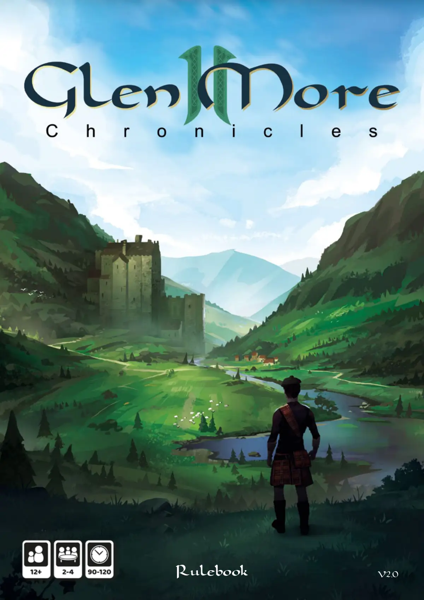
📝 第 1 页 AI 机翻对照（点击展开）
规则书
V2.0
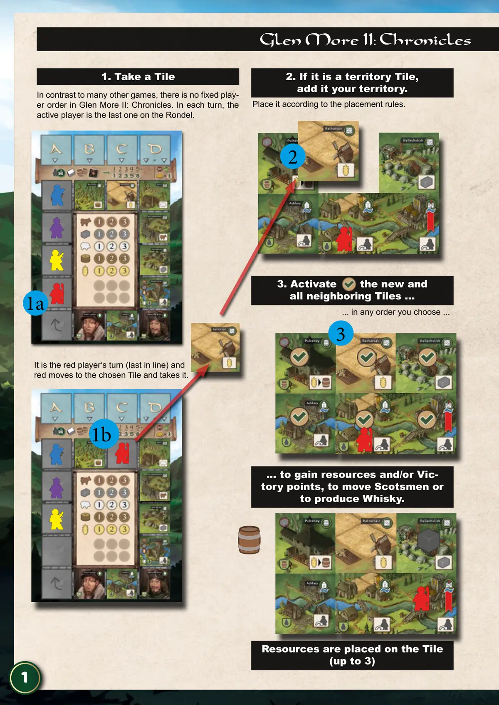
📝 第 2 页 AI 机翻对照（点击展开）
格伦莫尔II：编年史
与许多其他游戏不同，在《格伦莫尔II：编年史》(Glen More II: Chronicles)中没有固定的玩家顺序。在每个回合中，当前玩家是轮盘(Rondel)上的最后一位玩家。
现在是红色玩家的回合（排在最后），红色玩家移动到选中的板块(Tile)并拿取它。
根据放置规则放置它。
...以你选择的任何顺序...
2. 如果是领土板块，
将其加入你的领土。
1. 拿取一个板块
3. 激活新的和
所有相邻的板块...
...以获取资源和/或胜利点(Victory points)，移动苏格兰人(Scotsmen)或生产威士忌(Whisky)。
资源放置在板块上
（最多3个）
1a
1b
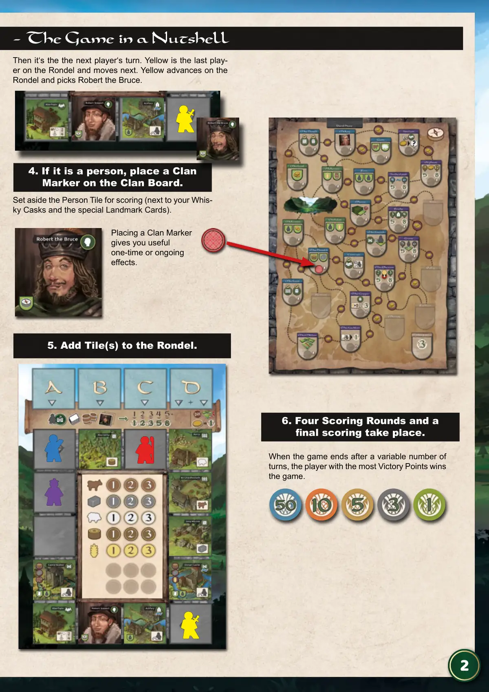
📝 第 3 页 AI 机翻对照（点击展开）
将人物板块(Person Tile)留待计分（放在你的威士忌桶(Whisky Casks)和特殊地标卡(special Landmark Cards)旁边）。
放置氏族标记(Clan Marker)
会给你有用的
一次性或持续性效果。
在可变数量的回合后游戏结束时，拥有最多胜利点(Victory Points)的玩家赢得游戏。
然后是下一位玩家的回合。黄色玩家是轮盘(Rondel)上的最后一位玩家，接下来行动。黄色玩家在轮盘上前进并选择罗伯特·布鲁斯(Robert the Bruce)。
- 游戏概览
4. 如果是人物板块，在氏族板(Clan Board)上放置一个氏族标记(Clan Marker)。
- 将板块添加到轮盘(Rondel)中。
6. 进行四次计分轮和最终计分。
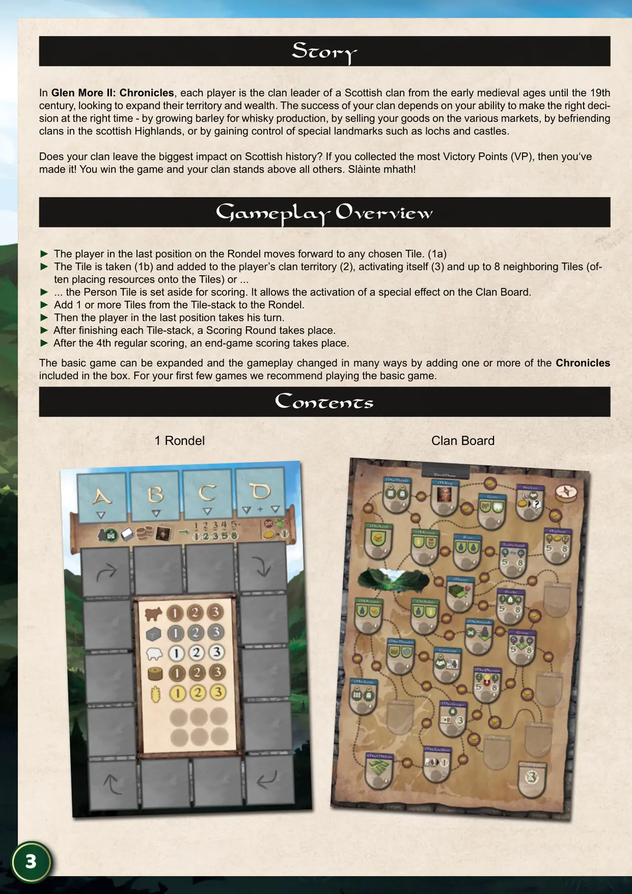
📝 第 4 页 AI 机翻对照（点击展开）
在《格伦莫尔II：编年史》(Glen More II: Chronicles)中，每位玩家都是从中世纪早期到19世纪的苏格兰氏族领袖，旨在扩展自己的领土和财富。你的氏族成功与否取决于你在正确时机做出正确决策的能力——通过种植大麦用于威士忌生产，通过各种市场出售你的商品，与苏格兰高地的氏族结交，或者通过获得湖泊和城堡等特殊地标的控制权。
你的氏族是否在苏格兰历史上留下了最大的影响？如果你获得了最多的胜利点(VP)，那么你就成功了！你赢得了游戏，你的氏族凌驾于所有其他氏族之上。干杯！(Slàinte mhath!)
通过添加盒中包含的一个或多个编年史(Chronicles)，基础游戏可以扩展，游戏玩法也可以以多种方式改变。对于前几局游戏，我们建议玩基础游戏。
故事
游戏概览
► 轮盘(Rondel)上最后位置的玩家向前移动到任意选择的板块(Tile)。(1a)
► 该板块被拿走(1b)并添加到玩家的氏族领土中(2)，激活自身(3)以及最多8个相邻板块(通常将资源放置在板块上)或...
► ...人物板块(Person Tile)被搁置用于计分。它允许在氏族板块(Clan Board)上激活特殊效果。
► 从板块堆(Tile-stack)中向轮盘添加1个或更多板块。
► 然后最后位置的玩家进行他的回合。
► 每完成一个板块堆后，进行一个计分轮(Scoring Round)。
► 在第4次常规计分后，进行游戏结束计分(end-game scoring)。
内容
1个轮盘(Rondel)
1个氏族板块(Clan Board)
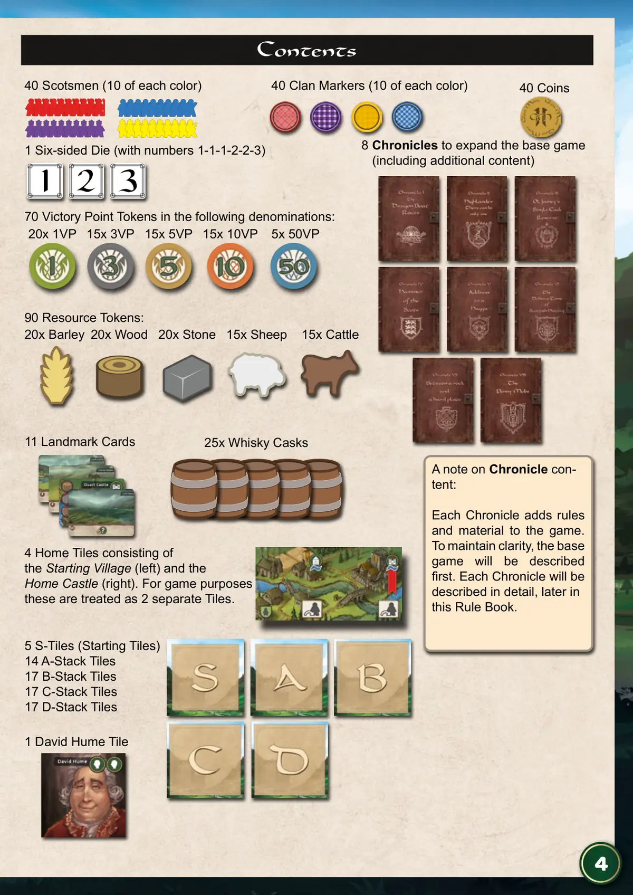
📝 第 5 页 AI 机翻对照（点击展开）
内容
40个苏格兰人(Scotsmen)(每种颜色10个)
40个氏族标记(Clan Markers)(每种颜色10个)
1个六面骰子(数字为1-1-1-2-2-3)
8个用于扩展基础游戏的编年史(Chronicles)
(包括额外内容)
40个硬币(Coins)
70个胜利点指示物(Victory Point Tokens)，面额如下：
90个资源指示物(Resource Tokens)：
20个大麦(Barley) 20个木材(Wood)
15个绵羊(Sheep)
20个石材(Stone)
15个牛(Cattle)
25个威士忌桶(Whisky Casks)
11个地标卡(Landmark Cards)
4个家园板块(Home Tiles)，包括
起始村庄(Starting Village)(左侧)和家园城堡(Home Castle)(右侧)。游戏目的
上，这些被视为2个独立的板块。
5个S板块(S-Stack Tiles)(起始板块)
14个A堆板块(A-Stack Tiles)
17个B堆板块(B-Stack Tiles)
17个C堆板块(C-Stack Tiles)
17个D堆板块(D-Stack Tiles)
1个大卫·休谟板块(David Hume Tile)
关于编年史内容的说明：
每个编年史都为游戏添加了规则和材料。
为了保持清晰，将首先描述基础游戏。
每个编年史将在本规则书的后面部分详细描述。
20个1VP 15个3VP 15个5VP 15个10VP 5个50VP
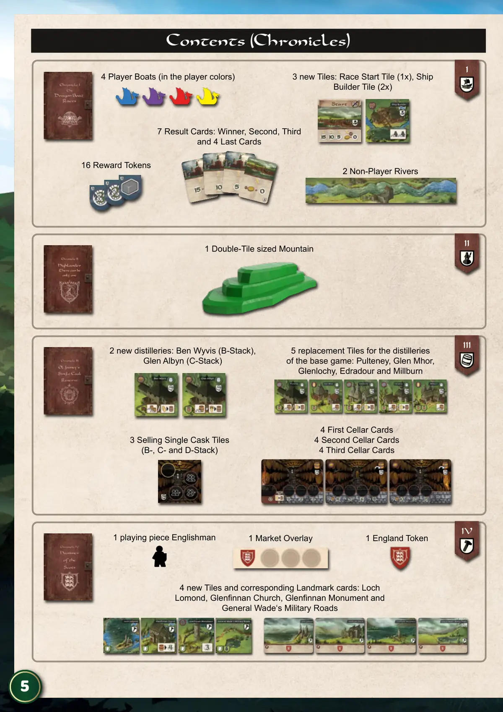
📝 第 6 页 AI 机翻对照（点击展开）
目录（编年史）
7 结果卡：第一名、第二名、第三名
和 4 张最后名次卡
1 张双板块大小的山脉
3 张销售单桶板块（B、C 和 D 堆）
2 张非玩家河流
16 个奖励指示物
4 个玩家船只（玩家颜色）
3 张新板块：比赛起点板块（1x），造船厂板块（2x）
5 张基础游戏酒厂替换板块：彭特尼、格恩莫尔、格恩洛奇、埃德拉多尔和米尔本
2 个新酒厂：本·怀维斯（B 堆）、格恩·阿尔宾（C 堆）
4 张第一酒窖卡
4 张第二酒窖卡
4 张第三酒窖卡
1 个英国人棋子
1 个市场覆盖板
1 个英国指示物
4 张新板块和相应的地标卡：洛蒙德湖、格伦芬南教堂、格伦芬南纪念碑和华德将军的军事道路
I
II
III
IV
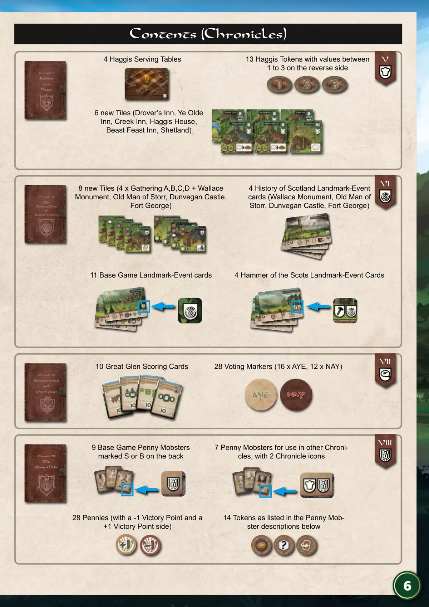
📝 第 7 页 AI 机翻对照（点击展开）
目录（编年史）
4 张哈吉斯服务桌
4 张"苏格兰之锤"地标-事件卡
10 张大峡谷计分卡
14 个如下的"便士暴徒"描述中列出的指示物
6 张新板块（赶牲畜客栈、老客栈、溪流客栈、哈吉斯屋、野兽盛宴客栈、设得兰）
13 张哈吉斯指示物，背面有 1 到 3 的分值
8 张新板块（4 张 A、B、C、D 集会 + 华莱士纪念碑、老人斯托尔、邓维根城堡、乔治堡）
11 张基础游戏地标-事件卡
28 个投票标记（16 个赞成，12 个反对）
9 张背面标有 S 或 B 的基础游戏"便士暴徒"
7 张用于其他编年史的"便士暴徒"，有 2 个编年史图标
28 便士（一面为 -1 胜利点，一面为 +1 胜利点）
4 张"苏格兰历史"地标-事件卡（华莱士纪念碑、老人斯托尔、邓维根城堡、乔治堡）
V
VI
VII
VIII
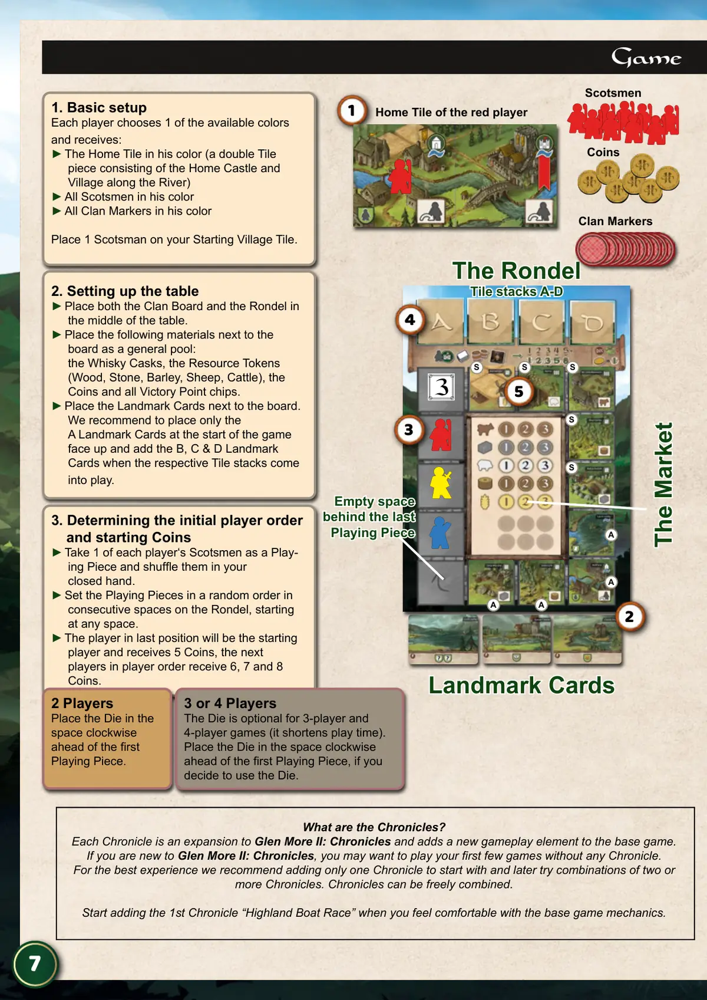
📝 第 8 页 AI 机翻对照（点击展开）
1. 基础设置
每位玩家选择1种可用颜色，并获得：
►其颜色的家园板块（一块包含沿河的家园城堡和村庄的双板块）
►其颜色的所有苏格兰人
►其颜色的所有氏族标记
在你的起始村庄板块上放置1个苏格兰人。
地标卡牌
地标卡牌
2. 设置桌面
►将氏族版图和轮盘放在桌子中央。
►将以下材料放在版图旁边作为公共池：
威士忌桶、资源标记（木材、石头、大麦、绵羊、牛）、硬币和所有胜利点筹码。
►将地标卡牌放在版图旁边。
我们建议游戏开始时只将A组地标卡牌正面朝上放置，当相应的板块堆进入游戏时，再添加B、C和D组地标卡牌。
3. 确定初始玩家顺序和起始硬币
►每位玩家拿出1个苏格兰人作为棋子，在你的手中洗混。
►将棋子以随机顺序连续放在轮盘的格子上，从任意格子开始。
►最后位置的玩家将是起始玩家并获得5枚硬币，玩家顺序中的下一位玩家获得6、7和8枚硬币。
什么是编年史？
每个编年史都是《格伦莫尔II：编年史》的扩展，为基础游戏添加了新的游戏元素。
如果你是《格伦莫尔II：编年史》的新手，你可能想在没有任何编年史的情况下进行前几局游戏。
为了获得最佳体验，我们建议开始时只添加一个编年史，之后尝试两个或更多编年史的组合。编年史可以自由组合。
当你熟悉基础游戏机制后，开始添加第一个编年史"高地赛艇"。
红色玩家的家园板块
苏格兰人
氏族标记
轮盘
轮盘
游戏
硬币
S
S
S
S
S
A
A
A
A
市场
市场
2人游戏
将骰子放在第一个棋子顺时针方向的下一个格子里。
3人或4人游戏
骰子对于3人和4人游戏是可选的（它会缩短游戏时间）。
如果你决定使用骰子，将其放在第一个棋子顺时针方向的下一个格子里。
板块堆A-D
板块堆A-D
空格
最后一个棋子
后面的空格
最后一个棋子
后面的空格
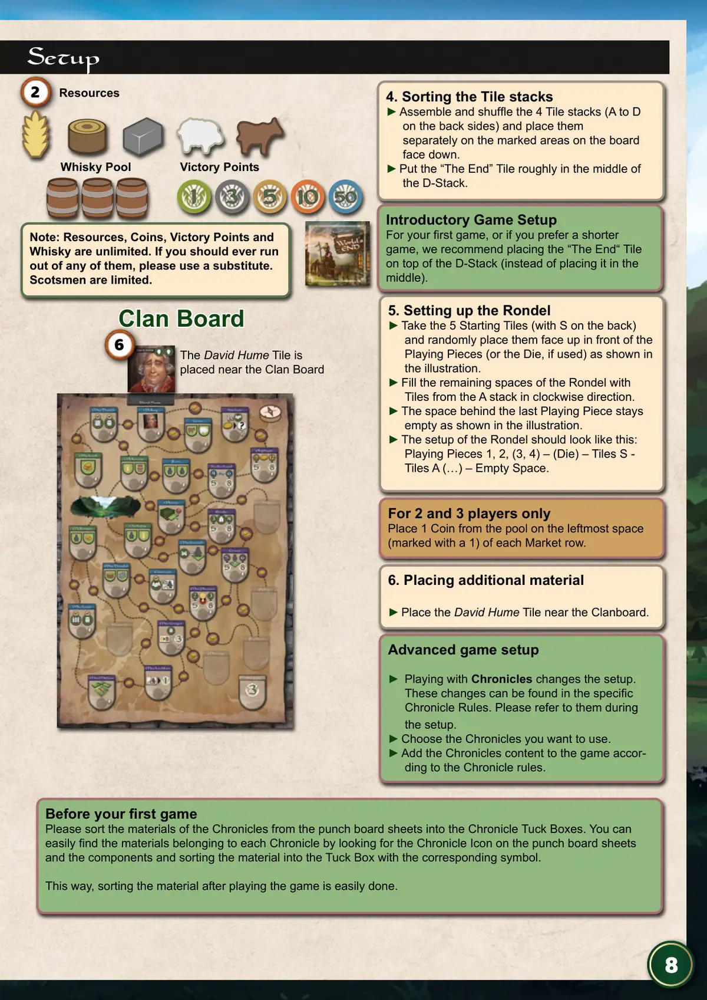
📝 第 9 页 AI 机翻对照（点击展开）
氏族版图
氏族版图
4. 整理板块堆
► 组洗并洗混4个板块堆（背面标记为A到D），然后将它们分别放置在版图上标记的区域，面朝下放置。
► 将"结束"板块大致放在D堆的中间。
大卫·休谟板块放置在氏族版图附近
资源
威士忌池
胜利点
设置
入门游戏设置
对于你的第一局游戏，或者如果你喜欢较短的游戏，我们建议将"结束"板块放在D堆的顶部（而不是放在中间）。
在开始游戏前
请将冲压板上的材料分拣到编年史收纳盒中。你可以通过查找冲压板上的编年图示以及组件上的标记，轻松找到每个编年史所属的材料，并将它们分拣到相应符号的收纳盒中。
这样，游戏结束后整理材料就很容易了。
5. 设置轮盘
► 取5个起始板块（背面有S标记），如图所示，将它们面朝上随机放置在棋子（或骰子，如果使用）的前方。
► 按顺时针方向，用A堆的板块填充轮盘上的剩余空位。
► 如图所示，最后一个棋子后面的空位保持空白。
► 轮盘的设置应如下所示：
棋子1、2、（3、4）–（骰子）–板块S – 板块A（…）– 空白空间。
仅限2-3名玩家
在每个市场行的最左侧空位（标记为1）上各放置1枚来自池中的硬币。
6. 放置额外材料
► 将大卫·休谟板块放置在氏族版图附近。
进阶游戏设置
► 使用编年史会改变设置。
这些变更可以在特定的编年史规则中找到。请在设置时参考它们。
► 选择你想要使用的编年史。
► 根据编年史规则，将编年史内容添加到游戏中。
注意：资源、硬币、胜利点和威士忌是无限的。如果你用完了其中任何一种，请使用替代品。
苏格兰人是有限的。
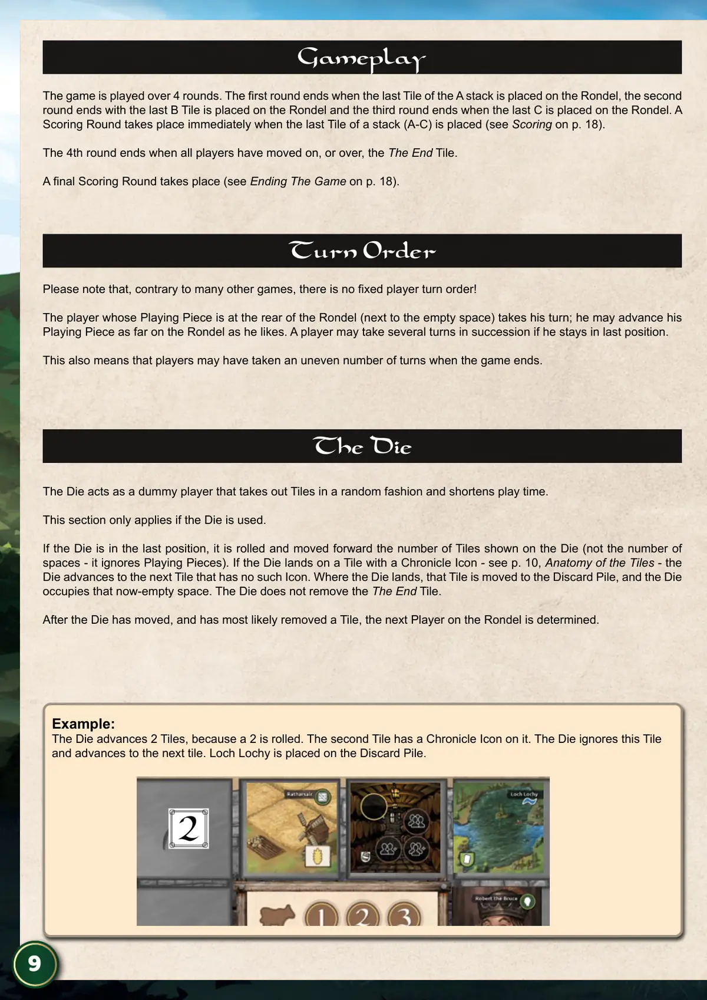
📝 第 10 页 AI 机翻对照（点击展开）
游戏进行
游戏进行4轮。第一轮在A堆的最后一块板块被放置到轮盘上时结束，第二轮在B堆的最后一块板块被放置到轮盘上时结束，第三轮在C堆的最后一块板块被放置到轮盘上时结束。当一个堆（A-C）的最后一块板块被放置后，立即进行计分轮（参见第18页的计分规则）。
当所有玩家都经过了或越过了"结束"板块时，第四轮结束。然后进行最终计分轮（参见第18页的"游戏结束"规则）。
请注意，与许多其他游戏不同，本游戏没有固定的玩家回合顺序！
轮盘最后位置（紧邻空格）的玩家棋子所在的玩家进行回合；他可以在轮盘上前进任意格数。如果玩家保持在最后位置，他可以连续进行多个回合。
这也意味着当游戏结束时，玩家可能进行了不同数量的回合。
骰子作为一个虚拟玩家，以随机方式取出板块，缩短游戏时间。
本节仅在使用骰子时适用。
如果骰子在最后位置，则掷骰子并向前移动骰子显示的板块数（不是格数-它忽略玩家棋子）。如果骰子落在带有年代图标的板块上-参见第10页，板块结构-骰子会前进到下一个没有此类图标的板块。骰子落下的位置，该板块被移到弃牌堆，骰子占据这个现在空出的位置。骰子不会移除"结束"板块。
骰子移动后，很可能移除了一块板块，然后确定轮盘上的下一位玩家。
回合顺序
骰子
示例：
骰子前进2块板块，因为掷出了2。第二块板块上有年代图标。骰子忽略这块板块并前进到下一块板块。洛赫洛奇板块被放置到弃牌堆。
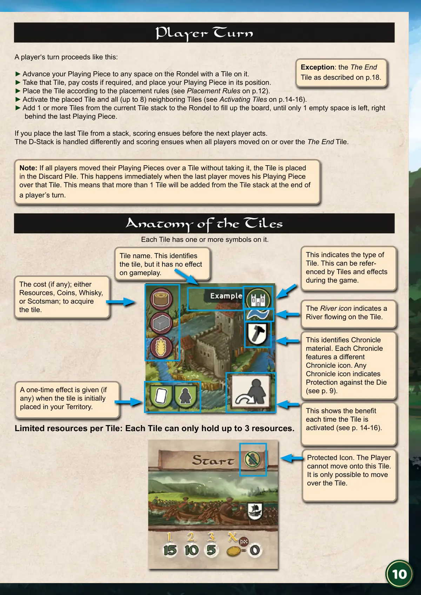
📝 第 11 页 AI 机翻对照（点击展开）
一个玩家的回合按以下顺序进行：
►将你的棋子前进到轮盘上任意一个有板块的格子上。
►拿起那个板块，如有需要支付费用，并将你的棋子放在其位置上。
►根据放置规则放置板块（参见第12页的放置规则）。
►激活被放置的板块及其所有（最多8个）相邻板块（参见第14-16页的激活板块）。
►从当前板块堆中添加1个或更多板块到轮盘上以填满版图，直到只剩下1个空格，位于最后一个棋子的正后方。
如果你从一堆板块中拿走了最后一个板块，则在下一个玩家行动前进行计分。
D-Stack的处理方式不同，当所有玩家移动到或超过终点板块时进行计分。
玩家回合
每个板块的资源有限：每个板块最多只能容纳3个资源。
注意：如果所有玩家都移动棋子越过一个板块而没有拿取它，该板块将被放入弃牌堆。当最后一个玩家移动棋子越过该板块时立即发生这种情况。这意味着在一个玩家回合结束时，会从板块堆中添加超过1个板块。
板块的组成部分
每个板块上有一个或多个符号。
费用（如有）：资源、金币、威士忌或苏格兰人，用于获取该板块。
这表示板块的类型。游戏中的板块和效果可以引用此类型。
河流图标表示板块上有河流流动。
板块名称。这用于识别板块，但对游戏玩法没有影响。
这识别编年史材料。每个编年史都有不同的编年史图标。任何编年史图标都表示对骰子的保护（参见第9页）。
板块首次放置在你的领土上时，会给予一次性效果（如有）。
这显示每次激活板块时的收益（参见第14-16页）。
受保护图标。玩家不能移动到这个板块上。只能越过该板块移动。
例外：如第18页所述的终点板块。
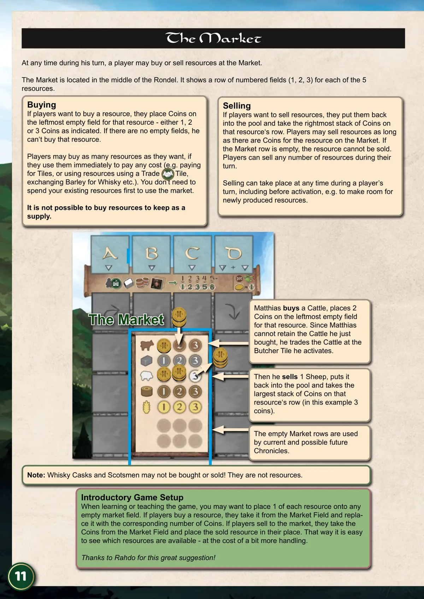
📝 第 12 页 AI 机翻对照（点击展开）
市场
在玩家的回合期间，任何时候玩家都可以在市场上买卖资源。
市场位于轮盘中央。它为5种资源各显示了一排编号区域（1、2、3）。
购买
如果玩家想要购买资源，他们将硬币放在该资源最左边的空区域上 - 根据指示放置1、2或3枚硬币。如果没有空区域，他不能购买该资源。
玩家可以购买任意数量的资源，只要他们立即使用这些资源来支付任何费用（例如支付板块费用，或使用交易板块使用资源，将大麦交换为威士忌等）。您不需要先花费现有资源就能使用市场。
不可能购买资源作为储备保存。
市场
市场
出售
如果玩家想要出售资源，他们将资源放回资源池，并取走该资源所在行最右边的硬币堆。只要市场上该资源有硬币，玩家就可以出售资源。如果市场行是空的，则无法出售该资源。
玩家可以在自己的回合期间出售任意数量的资源。
出售可以在玩家的回合期间的任何时候进行，包括在激活行动之前，例如为了为新生产的资源腾出空间。
注意：威士忌桶和苏格兰人不能买卖！它们不是资源。
新手游戏设置
在学习或教授游戏时，您可能希望将每种资源各一个放在任何空的市场区域上。如果玩家购买资源，他们从市场区域取走资源，并用相应数量的硬币替换。如果玩家向市场出售资源，他们从市场区域取走硬币，并将出售的资源放在那里。这样很容易看出哪些资源可用 - 尽管需要多做一些处理。
感谢Rahdo提出的这个绝佳建议！
然后他出售1只绵羊，将其放回资源池，并取走该资源所在行最上面的硬币堆（在本例中是3枚硬币）。
空的市场行由当前和可能的未来编年史使用。
Matthias购买1头牛，在该资源最左边的空区域上放置2枚硬币。由于Matthias不能保留他刚购买的牛，他在他激活的屠夫板块上交易这头牛。
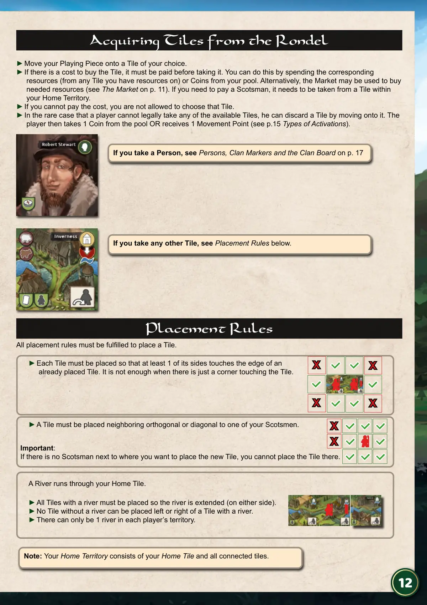
📝 第 13 页 AI 机翻对照（点击展开）
从轮盘获取板块
►将你的棋子移动到你选择的板块上。
►如果购买板块有成本，必须在拿取板块前支付。你可以通过花费相应的资源（从你拥有资源的任何板块上）或你池中的金币来支付。或者，可以使用市场购买所需的资源（参见第11页的市场）。如果你需要支付苏格兰人，必须从你家园领土内的板块上获取。
►如果你无法支付成本，则不允许选择该板块。
►在极少数情况下，如果玩家无法合法获取任何可用的板块，他可以通过移动到板块上来弃置一个板块。然后该玩家从池中获取1枚金币或获得1个移动点（参见第15页激活类型）。
如果你获取了人物，参见第17页的人物、氏族标记和氏族板块。
如果你获取了任何其他板块，请参见下面的放置规则。
注意：你的家园领土包括你的家园板块和所有相连的板块。
放置规则
必须满足所有放置规则才能放置板块。
►每个板块必须放置，使其至少1个边与已放置板块的边缘接触。只有角落接触板块是不够的。
►板块必须放置在你某个苏格兰人的正交或相邻对角位置。
重要：
如果你想要放置新板块的位置旁边没有苏格兰人，你不能在那里放置板块。
河流穿过你的家园板块。
►所有带有河流的板块必须放置，使河流得到延伸（在任一侧）。
►没有河流的板块不能放置在有河流板块的左侧或右侧。
►每个玩家的领土中只能有1条河流。
L
L
L
L
X
X
X
L
L
X
X
X
L
L
L
L
L
L
L
L
L
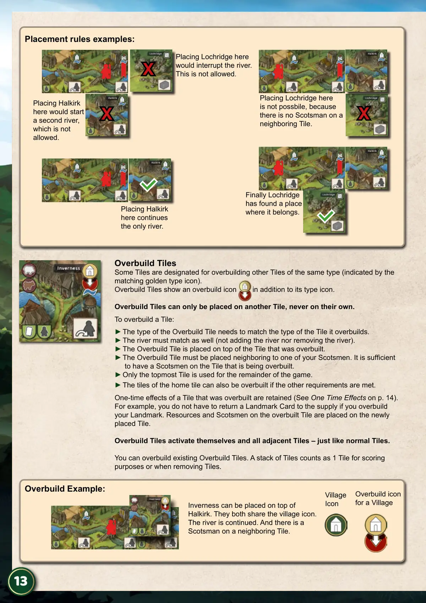
📝 第 14 页 AI 机翻对照（点击展开）
放置规则示例：
加盖示例：
加盖板块
一些板块被设计用来加盖同类型的其他板块（通过匹配的金色类型图标表示）。
加盖板块除了类型图标外，还显示一个加盖图标。
加盖板块只能放置在其他板块上，不能单独放置。
要加盖一个板块：
► 加盖板块的类型必须与被加盖板块的类型相匹配。
► 河流也必须匹配（不能添加或移除河流）。
► 加盖板块放置在被加盖板块的顶部。
► 加盖板块必须放置在你的苏格兰人相邻的位置。在被加盖板块上有一个苏格兰人就足够了。
► 只有最顶层的板块在游戏的其余部分使用。
► 如果满足其他要求，起始板块也可以被加盖。
被加盖板块的一次性效果会被保留（参见第14页的一次性效果）。
例如，如果你加盖了你的地标，你不必将地标卡牌归还到牌库。被加盖板块上的资源和苏格兰人会被放置在新放置的板块上。
加盖板块会激活自身和所有相邻板块——就像普通板块一样。
你可以加盖现有的加盖板块。对于计分目的或移除板块时，一叠板块计为1个板块。
在这里放置哈尔基克(Halkirk)会
开始第二条河流，这是不允许的。
在这里放置洛奇里奇(Lochridge)会
中断河流。这是不允许的。
在这里放置洛奇里奇(Lochridge)是不
可能的，因为没有苏格兰人在相邻的板块上。
最后洛奇里奇找到了一个
属于它的位置。
在这里放置哈尔基克(Halkirk)
继续了唯一的河流。
X
X
X
L
L
因弗内斯(Inverness)可以放置在
哈尔基克(Halkirk)的上方。它们都共享村庄图标。
河流被继续。并且有一个苏格兰人在相邻的板块上。
村庄图标
村庄的
加盖图标
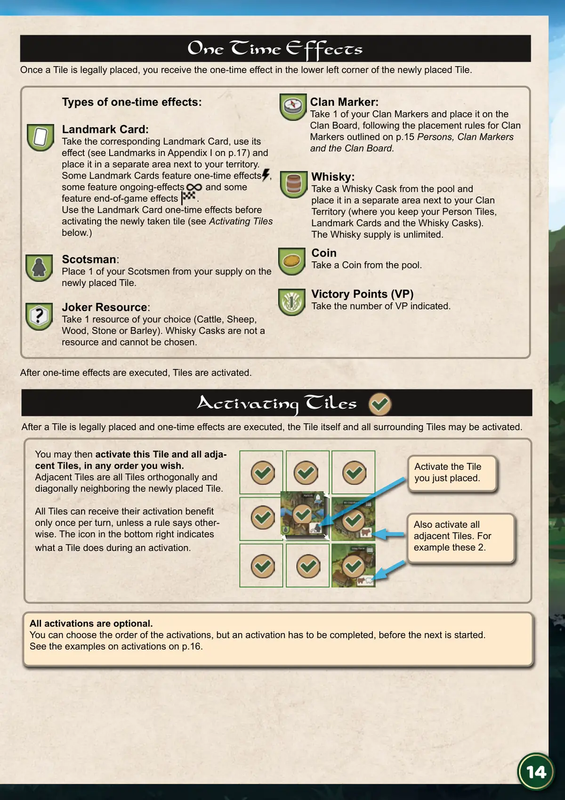
📝 第 15 页 AI 机翻对照（点击展开）
一次性效果
当板块被合法放置后，你将获得新放置板块左下角的一次性效果。
执行一次性效果后，板块将被激活。
氏族标记：
从你的氏族标记中取出1个，按照第15页"人物、氏族标记和氏族板"中概述的氏族标记放置规则，将其放置在氏族板上。
一次性效果的类型：
地标卡：
获取对应的地标卡，使用其效果（参见附录I第17页的地标），并将其放置在你的领土旁边的独立区域。一些地标卡具有一次性效果，一些具有持续效果，一些具有游戏结束效果。在激活新获得的板块之前使用地标卡的一次性效果（参见下方的"激活板块"）。
苏格兰人：
从你的储备中取出1个苏格兰人，放置在新放置的板块上。
百搭资源：
选择1种资源（牛、羊、木材、石头或大麦）。威士忌桶不是资源，不能被选择。
威士忌：
从储备中取出1个威士忌桶，放置在你的氏族领土旁边的独立区域（你在此存放人物板块、地标卡和威士忌桶的地方）。威士忌供应是无限的。
硬币：
从储备中取出1枚硬币。
胜利点(VP)
获取指示数量的VP。
激活板块
当板块被合法放置且一次性效果执行完毕后，该板块及其周围的所有板块都可以被激活。
然后你可以按照你希望的任何顺序激活这个板块和所有相邻板块。
相邻板块是指与新放置板块正交和对角相邻的所有板块。
所有板块每回合只能获得一次激活收益，除非另有规则说明。右下角的图标表明板块在激活期间的作用。
激活你
刚刚放置的板块。
同时激活所有
相邻板块。例如这2个。
所有激活都是可选的。你可以选择激活的顺序，但必须完成一次激活后才能开始下一次激活。关于激活的示例参见第16页。
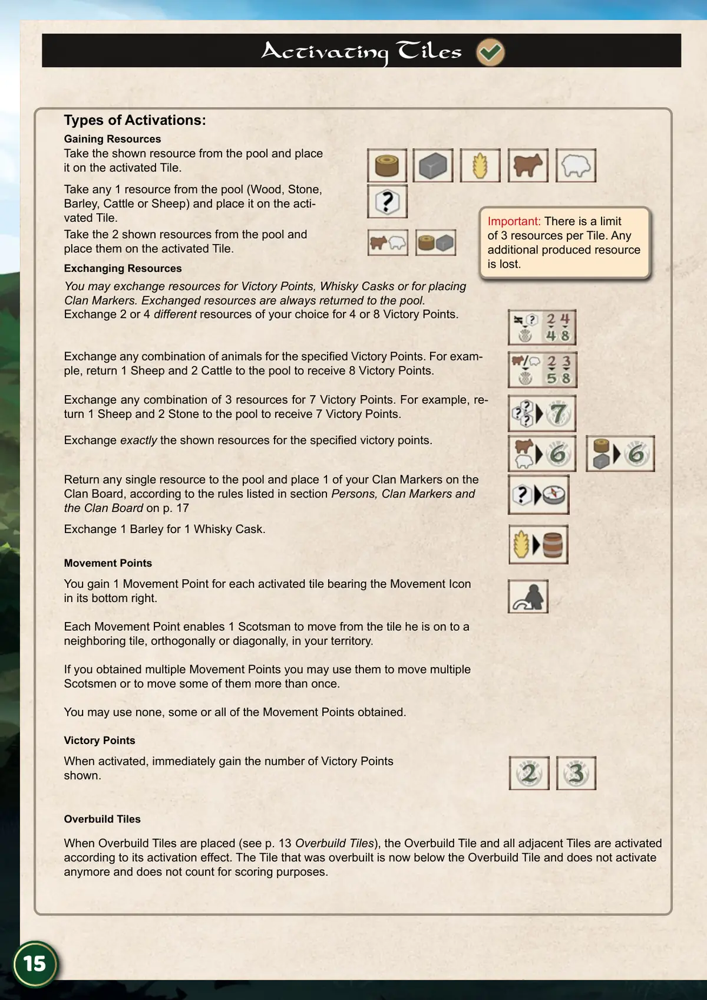
📝 第 16 页 AI 机翻对照（点击展开）
激活类型：
获取资源
交换资源
行动点
胜利点
覆盖板块
从资源池中取出所示资源并将其放置在激活的板块上。
从资源池中任取1种资源（木材、石头、大麦、牛或羊）并将其放置在激活的板块上。
从资源池中取出2种所示资源并将它们放置在激活的板块上。
将2种或4种你选择的不同资源交换为4分或8胜利点。
你可以将资源交换为胜利点、威士忌桶或放置氏族标记。被交换的资源总是返回到资源池。
将任意组合的动物交换为指定的胜利点。例如，将1只羊和2头牛返回到资源池以获得8胜利点。
将任意组合的3种资源交换为7胜利点。例如，将1只羊和2块石头返回到资源池以获得7胜利点。
将恰好所示的资源交换为指定的胜利点。
将任意1种资源返回到资源池，并根据第17页"人物、氏族标记和氏族板块"一节中列出的规则，将你的1个氏族标记放置在氏族板块上。
用1大麦交换1威士忌桶。
你为每个在右下角带有行动图标的激活板块获得1个行动点。
每个行动点允许1个苏格兰人从他所在的板块移动到相邻的板块（正交或对角线方向），且该板块必须位于你的领土内。
如果你获得了多个行动点，你可以使用它们移动多个苏格兰人或移动其中一些苏格兰人多次。
你可以使用所获得的零个、部分或全部行动点。
激活时，立即获得所示的胜利点数量。
当放置覆盖板块时（参见第13页覆盖板块），覆盖板块和所有相邻板块根据其激活效果被激活。被覆盖的板块现在位于覆盖板块下方，不再激活，也不计入计分。
激活板块
重要提示：每个板块最多有3种资源。任何额外产生的资源都将丢失。
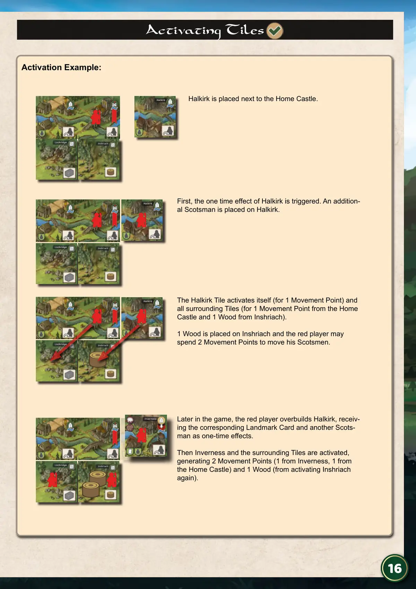
📝 第 17 页 AI 机翻对照（点击展开）
激活板块
激活示例：
哈克irk板块放置在家城堡旁边。
首先，触发哈克irk的一次性效果。一个额外的苏格兰人被放置在哈克irk上。
哈克irk板块激活自身（消耗1行动点）和所有周围板块（从家城堡消耗1行动点，从因什里奇消耗1木材）。
1个木材被放置在因什里奇，红色玩家可以花费2行动点来移动他的苏格兰人。
游戏后期，红色玩家覆盖建造了哈克irk，获得相应的地标卡牌和另一个苏格兰人作为一次性效果。
然后因弗内斯和周围板块被激活，产生2行动点（1来自因弗内斯，1来自家城堡）和1木材（来自再次激活因什里奇）。
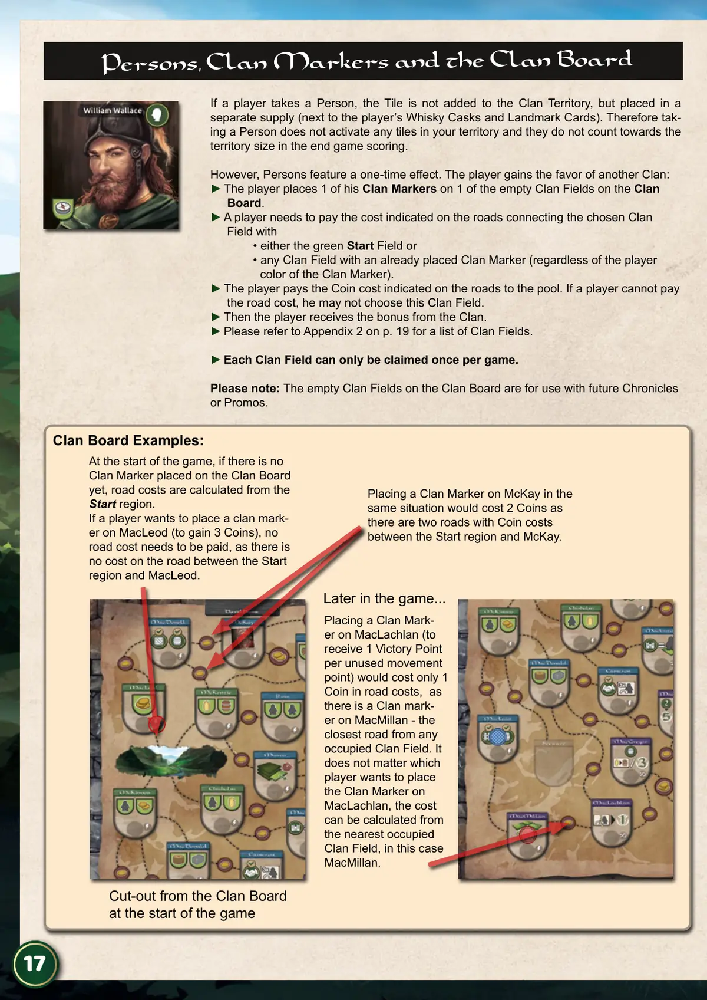
📝 第 18 页 AI 机翻对照（点击展开）
人物、氏族标记和氏族版图
如果玩家获得一张人物牌，该板块不会加入氏族领土，而是放置在一个单独的供应区（紧邻玩家的威士忌桶和地标卡牌旁）。因此，获得人物不会激活你领土中的任何板块，它们也不计入游戏结束计分时的领土大小。
然而，人物具有一次性效果。玩家获得另一个氏族的青睐：
► 玩家将他的一个氏族标记放置在氏族版图上的一个空氏族格上。
► 玩家需要支付连接所选氏族格与
• 绿色起始格，或
• 任何已放置氏族标记的氏族格（无论氏族标记的玩家颜色如何）
的道路上标示的费用。
► 玩家将道路上标示的硬币费用支付到公共池中。如果玩家无法支付道路费用，他不能选择这个氏族格。
► 然后玩家获得氏族的奖励。
► 请参阅第19页附录2中的氏族格列表。
► 每个氏族格每局游戏只能被占领一次。
请注意：氏族版图上的空氏族格用于未来的编年史或促销内容。
氏族版图示例：
游戏开始时从氏族版图上剪下的部分
游戏后期...
游戏开始时，如果氏族版图上还没有放置任何氏族标记，道路费用从起始区域计算。
如果玩家想在麦克劳德（MacLeod）上放置一个氏族标记（以获得3枚硬币），无需支付任何道路费用，因为起始区域和麦克劳德之间的道路上没有费用。
在相同情况下，在麦凯（McKay）上放置氏族标记将花费2枚硬币，因为起始区域和麦凯之间有两条标有硬币费用的道路。
在麦克拉赫兰（MacLachlan）上放置一个氏族标记（以获得每个未使用移动点1个胜利点）将仅花费1枚硬币的道路费用，因为麦克米伦（MacMillan）上有一个氏族标记——这是从任何已占领氏族格最近的道路。无论哪个玩家想在麦克拉赫兰上放置氏族标记，费用都可以从最近的已占领氏族格计算，在本例中是麦克米伦。
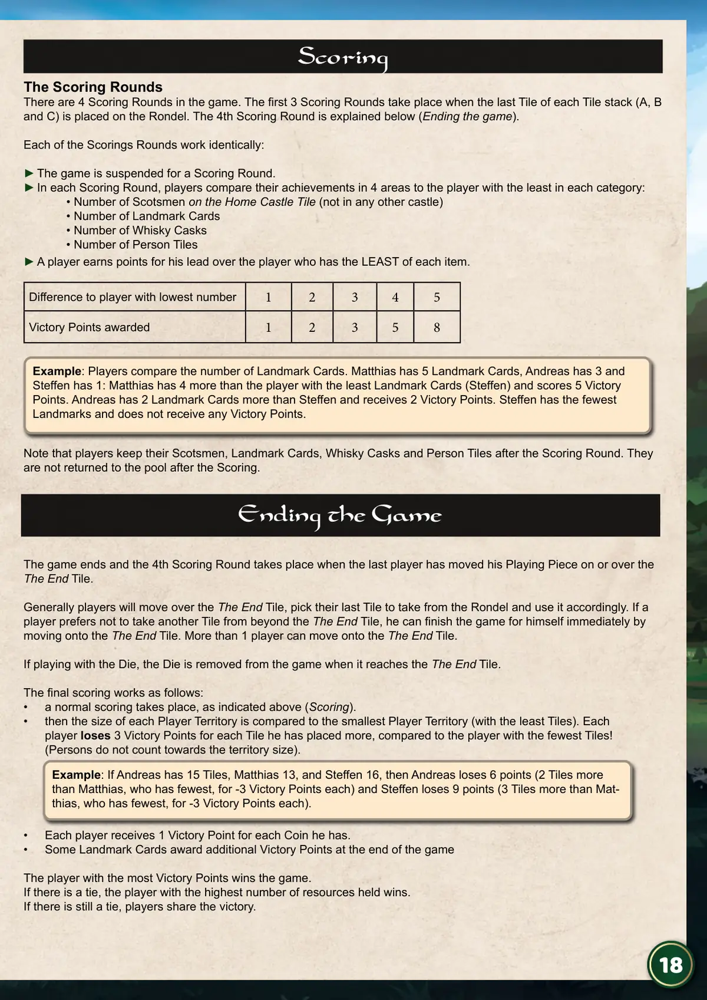
📝 第 19 页 AI 机翻对照（点击展开）
游戏结束
当最后一位玩家将其棋子移动到或越过"终点板块"(The End Tile)上时，游戏结束并进行第4轮计分。
通常玩家会越过"终点板块"，从轮盘(Rondel)上拿取最后一块板块并相应使用。如果玩家不想从"终点板块"之后再拿取板块，他可以通过移动到"终点板块"上立即结束自己的游戏。可以有超过一位玩家移动到"终点板块"上。
如果使用骰子(Die)，当骰子到达"终点板块"时，骰子将从游戏中移除。
最终计分方式如下：
• 进行一次常规计分，如上所述(计分部分)。
• 然后比较每位玩家领土的大小与最小的玩家领土(板块最少)。每位玩家比板块最少的玩家多放置的每一块板块将失去3个胜利点！
(人物不计入领土大小)。
• 每位玩家获得其拥有的每个硬币(Coin)的1个胜利点。
• 一些地标卡(Landmark Cards)在游戏结束时授予额外的胜利点。
拥有最多胜利点的玩家赢得游戏。
如果有平局，拥有最多资源的玩家获胜。
如果仍然平局，玩家共享胜利。
计分
计分轮
游戏中有4轮计分。前3轮计分在每个板块堆(A、B和C)的最后一块板块被放置到轮盘上时进行。第4轮计分如下所述(游戏结束)。
每轮计分的工作方式相同：
►游戏暂停进行一轮计分。
►在每轮计分中，玩家在4个领域比较自己的成就，与每个类别中最少的玩家比较：
• 在家乡城堡板块(Home Castle Tile)上的苏格兰人数量(不在任何其他城堡中)
• 地标卡数量
• 威士忌桶(Whisky Casks)数量
• 人物板块(Person Tiles)数量
• 玩家因在每项上领先于拥有最少的玩家而获得分数。
示例：玩家比较地标卡数量。马蒂亚斯(Matthias)有5张地标卡，安德烈亚斯(Andreas)有3张，斯特芬(Steffen)有1张：马蒂亚斯比拥有最少地标卡的玩家(斯特芬)多4张，获得5个胜利点。安德烈亚斯比斯特芬多2张地标卡，获得2个胜利点。斯特芬拥有最少的地标卡，不获得任何胜利点。
与最少数量玩家的差距
授予的胜利点
示例：如果安德烈亚斯有15块板块，马蒂亚斯13块，斯特芬16块，那么安德烈亚斯失去6分(比板块最少的马蒂亚斯多2块，每块-3胜利点)，斯特芬失去9分(比板块最少的马蒂亚斯多3块，每块-3胜利点)。
注意，玩家在计分轮后保留其苏格兰人、地标卡、威士忌桶和人物板块。他们
在计分后不会被返回到公共池中。
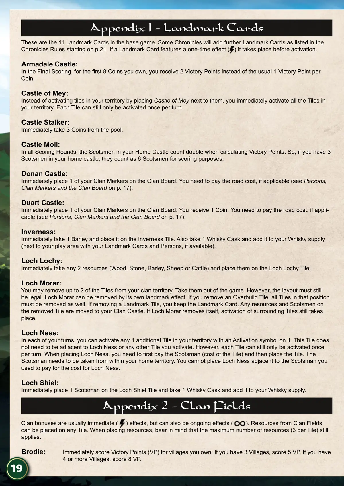
📝 第 20 页 AI 机翻对照（点击展开）
附录 1 - 地标卡牌
附录 2 - 氏族田地
这是基础游戏中的 11 张地标卡牌。一些编年史会根据第 21 页开始的编年史规则添加更多的地标卡牌。如果地标卡牌具有一次性效果（ ），则该效果在激活前发生。
阿默代尔城堡：
在最终计分中，对于你拥有的前 8 枚金币，你每枚金币获得 2 个胜利点，而不是通常的每个金币 1 个胜利点。
梅城堡：
不是通过将梅城堡放置在你的领土板块旁边来激活这些板块，而是立即激活你领土中的所有板块。每个板块每回合仍只能激活一次。
斯塔克勒城堡：
立即从牌池中拿取 3 枚金币。
莫伊尔城堡：
在所有计分轮中，计算胜利点时，你家乡城堡中的苏格兰人数量翻倍。因此，如果你的家乡城堡中有 3 个苏格兰人，计分时他们算作 6 个苏格兰人。
多南城堡：
立即在你的氏族版图上放置 1 个你的氏族标记。如果适用，你需要支付道路费用（参见第 17 页的人物、氏族标记和氏族版图）。
杜尔特城堡：
立即在你的氏族版图上放置 1 个你的氏族标记。你获得 1 枚金币。如果适用，你需要支付道路费用（参见第 17 页的人物、氏族标记和氏族版图）。
因弗内斯：
立即拿取 1 个大麦并将其放置在因弗内斯板块上。同时拿取 1 个威士忌桶并将其添加到你的威士忌供应中（如果有的话，放在你的游戏区域旁边，与你的地标卡牌和人物在一起）。
洛赫洛奇：
立即拿取任意 2 种资源（木材、石头、大麦、绵羊或牛）并将它们放置在洛赫洛奇板块上。
洛赫莫拉尔：
你可以移除你氏族领土中最多 2 个板块。将它们移出游戏。然而，布局必须仍然合法。洛赫莫拉尔可以通过其自身的地标效果被移除。如果你移除一个叠加建造板块，该位置的所有板块也必须被移除。如果移除一个地标板块，你保留地标卡牌。被移除板块上的任何资源和苏格兰人都将被移动到你的氏族城堡。如果洛赫莫拉尔自行移除，周围板块的激活仍然会发生。
洛赫尼斯：
在你的每个回合中，你可以激活你领土中带有激活符号的任意 1 个额外板块。该板块不需要与洛赫尼斯或你激活的任何其他板块相邻。然而，每个板块每回合仍只能激活一次。放置洛赫尼斯时，你需要先支付苏格兰人（板块的费用），然后放置板块。苏格兰人必须从你的家乡领土内拿取。你不能将洛赫尼斯放置在你用于支付洛赫尼斯费用的苏格兰人旁边。
洛赫希尔：
立即在洛赫希尔板块上放置 1 个苏格兰人，并拿取 1 个威士忌桶并将其添加到你的威士忌供应中。
氏族奖励通常是立即( )效果，但也可以是持续效果( )。氏族田的资源可以放置在任何板块上。放置资源时，请记住最大资源数量（每板块3个）仍然适用。
布罗迪（Brodie）：
立即为你拥有的村庄计分胜利点（VP）：如果你有3个村庄，获得5 VP。如果你有4个或更多村庄，获得8 VP。
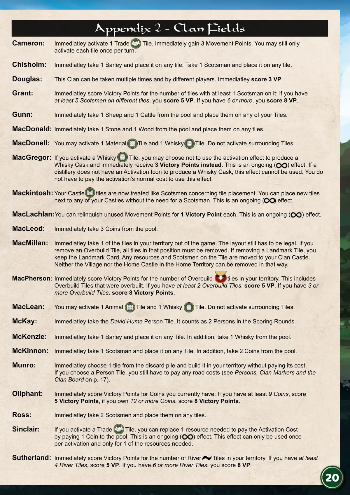
📝 第 21 页 AI 机翻对照（点击展开）
附录 2 - 氏族田地
卡梅伦 (Cameron):
立即激活 1 个贸易板块。立即获得 3 个行动点。你仍然每个回合只能激活每个板块一次。
奇泽姆 (Chisholm): 立即从牌池中取 1 个大麦并将其放置在任何板块上。取 1 个苏格兰人并将其放置在任何板块上。
道格拉斯 (Douglas):
这个氏族可以被多次获取，也可以被不同的玩家获取。立即获得 3 个 VP。
格兰特 (Grant):
立即根据带有至少 1 个苏格兰人的板块数量获得胜利点：如果你在至少 5 个不同的板块上有苏格兰人，你获得 5 个 VP。如果你有 6 个或更多，你获得 8 个 VP。
冈恩 (Gunn):
立即从牌池中取 1 只羊和 1 头牛，并将它们放置在你的任何板块上。
麦克唐纳 (MacDonald): 立即从牌池中取 1 块石头和 1 块木材，并将它们放置在任何板块上。
麦克唐奈尔 (MacDonell): 你可以激活 1 个资源板块和 1 个威士忌板块。不要激活周围的板块。
麦克格雷戈 (MacGregor): 如果你激活一个威士忌板块，你可以选择不使用激活效果来生产一个威士忌桶，而是立即获得 3 个胜利点。这是一个持续( )效果。如果酿酒厂没有用于生产威士忌桶的激活图标，则不能使用此效果。使用此效果时，你无需支付激活的正常费用。
麦金托什 (Mackintosh): 你的城堡板块现在在板块放置方面被视为苏格兰人。你可以在不需要苏格兰人的情况下，在任何城堡旁边放置新板块。这是一个持续( )效果。
麦克拉克伦 (MacLachlan): 你可以将未使用的行动点兑换为 1 个胜利点。这是一个持续( )效果。
麦克劳德 (MacLeod):
立即从牌池中取 3 个金币。
麦克米伦 (MacMillan): 立即将你领土中的 1 个板块移出游戏。布局仍然必须合法。如果你移除一个叠加板块，该位置的所有板块都必须被移除。如果移除一个地标板块，你保留地标卡。板块上的任何资源和苏格兰人都会被移动到你的氏族城堡。家乡领土中的村庄和主城堡不能以这种方式被移除。
麦克弗森 (MacPherson): 立即根据你领土中的叠加板块数量获得胜利点。这包括被叠加的叠加板块。如果你至少有 2 个叠加板块，获得 5 个 VP。如果你有 3 个或更多叠加板块，获得 8 个胜利点。
麦克莱恩 (MacLean):
你可以激活 1 个动物板块和 1 个威士忌板块。不要激活周围的板块。
麦凯 (McKay):
立即获得大卫·休姆人物板块。在计分轮中，它算作 2 个人物。
麦肯齐 (McKenzie): 立即取 1 个大麦并将其放置在任何板块上。此外，从牌池中取 1 个威士忌。
麦金农 (McKinnon): 立即取 1 个苏格兰人并将其放置在任何板块上。此外，从牌池中取 2 个金币。
门罗 (Munro):
立即从弃牌堆中选择1个板块并在你的领土上建造，无需支付其费用。
如果你选择了一个人物板块，你仍然需要支付任何道路费用（参见第17页的人物、氏族标记和氏族板块）。
Oliphant（奥利芬特）：
立即为你当前拥有的硬币计分胜利点：如果你至少拥有9枚硬币，获得5个胜利点；如果你拥有12枚或更多硬币，获得8个胜利点。
Ross（罗斯）：
立即拿取2个苏格兰人并将他们放置在任何板块上。
Sinclair（辛克莱）：
如果你激活一个贸易板块，你可以通过向牌池支付1枚硬币来替换支付激活成本所需的1种资源。这是一个持续( )效果。此效果每次激活只能使用一次，且只能用于所需资源中的1种。
Sutherland（萨瑟兰）：
立即为你领土上的河流板块数量计分胜利点。如果你至少拥有4个河流板块，获得5个VP。如果你拥有6个或更多河流板块，你获得8个VP。
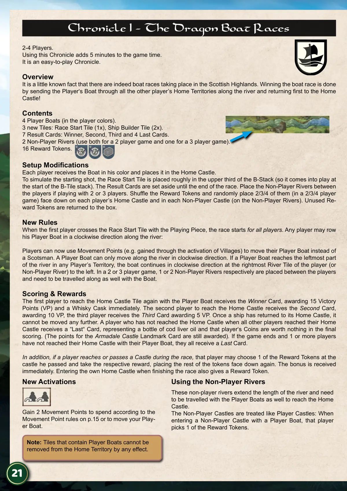
📝 第 22 页 AI 机翻对照（点击展开）
编年史1 - 龙舟赛
2-4名玩家。
使用此编年史会增加5分钟的游戏时间。
这是一个易于游玩的编年史。
概述
鲜为人知的是，苏格兰高地确实有龙舟比赛。赢得龙舟比赛的方法是让玩家的龙舟沿着河流穿过所有其他玩家的家园区域，并第一个返回家园城堡！
内容
4艘玩家龙舟（玩家颜色）。
3个新板块：起点板块（1个）、造船厂板块（2个）。
7张结果卡：冠军、亚军、季军和4张末位卡。
2条非玩家河流（2人游戏时使用两条，3人游戏时使用一条）。
16个奖励指示物。
设置修改
每位玩家获得自己颜色的龙舟，并将其放置在家园城堡中。
为了模拟发令枪，起点板块大致放置在B叠牌的上三分之一处（这样它会在B板块叠开始时进入游戏）。结果卡被留置到比赛结束。如果是2人或3人游戏，将非玩家河流放置在玩家之间。洗混奖励指示物，并随机放置2/3/4个（在2/3/4人游戏中）面朝下在每个玩家的家园城堡和每个非玩家城堡（在非玩家河流上）。未使用的奖励指示物放回盒中。
新规则
当第一位玩家用棋子越过起点板块时，比赛对所有玩家开始。任何玩家都可以顺时针方向沿着河流划动自己的玩家龙舟：
玩家现在可以使用行动点（例如通过激活村庄获得的）来移动他们的玩家龙舟，而不是苏格兰人。玩家龙舟只能沿着河流顺时针方向移动。如果玩家龙舟到达任何玩家区域河流的最左端，船只会继续向左的玩家（或非玩家河流）的最右端河板块顺时针方向移动。在2人或3人游戏中，分别在玩家之间放置1条或2条非玩家河流，龙舟也需要沿着这些河流航行。
计分与奖励
第一个带着玩家龙舟再次到达家园板块的玩家获得冠军卡，立即获得15个胜利点（VP）和一个威士忌桶。第二个到达家园城堡的玩家获得亚军卡，获得10 VP，第三个玩家获得季军卡，获得5 VP。一旦船只返回其家园城堡，就不能再移动。当所有其他玩家都到达家园城堡时，未到达家园城堡的玩家获得一张"末位"卡，代表一瓶鳕鱼肝油，该玩家的硬币在最终计分中毫无价值。（Armadale城堡地标卡的分数仍然会获得）。如果游戏结束，1名或多名玩家
如果玩家没有用他们的玩家船只到达他们的主城堡，他们都会获得一张最后卡牌。
此外，如果玩家在比赛中到达或经过一座城堡，该玩家可以选择他所经过城堡中的一枚奖励指示物，并获得相应的奖励，然后将剩余的指示物面朝下放回。奖励立即获得。在完成比赛时进入自己的主城堡也会获得一枚奖励指示物。
获得2个移动点，可根据第15页的移动点规则使用，或用于移动你的玩家船只。
这些非玩家河流延长了河流的长度，也需要用玩家船只航行才能到达主城堡。
非玩家城堡被视为玩家城堡：当用玩家船只进入非玩家城堡时，该玩家选择一枚奖励指示物。
新的激活
使用非玩家河流
注意：包含玩家船只的板块不能被任何效果从主领土上移除。
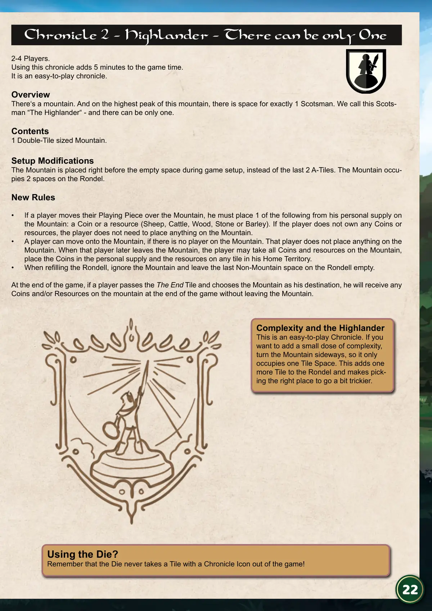
📝 第 23 页 AI 机翻对照（点击展开）
2-4名玩家。
使用此编年史会使游戏时间增加5分钟。
这是一个易于游玩的编年史。
概览
有一座山。在这座山的最高峰，恰好有1个苏格兰人的位置。我们称这个苏格兰人为"高地人"——而且只能有一个。
内容
1个双板块大小的山。
设置修改
在游戏设置期间，山被放置在空板块之前，而不是最后两个A板块。山占据轮盘上的2个区域。
新规则
• 如果玩家将他们的棋子移过山，他必须从他的个人供应中放置以下物品之一在山上：1枚硬币或1种资源（羊、牛、木材、石头或大麦）。如果玩家没有任何硬币或资源，则不需要在山上放置任何东西。
• 如果山上没有玩家，玩家可以移动到山上。该玩家不会在山上放置任何东西。当该玩家后来离开山时，他可以拿走山上的所有硬币和资源，将硬币放入个人供应，并将资源放置在他家乡领土的任何板块上。
• 在补充轮盘时，忽略山，并将轮盘上最后一个非山区域留空。
在游戏结束时，如果玩家经过终点板块并选择山作为目的地，他将在游戏结束时获得山上的任何硬币和/或资源，而无需离开山。
编年史2 - 高地人 - 只能有一个
使用骰子？
请记住，骰子永远不会将带有编年史图标的板块移出游戏！
复杂度与高地人
这是一个易于游玩的编年史。如果你想增加一点复杂度，可以将山横向放置，使其只占据1个板块区域。这会使轮盘上多出一个板块，并使选择正确的位置变得更加困难。
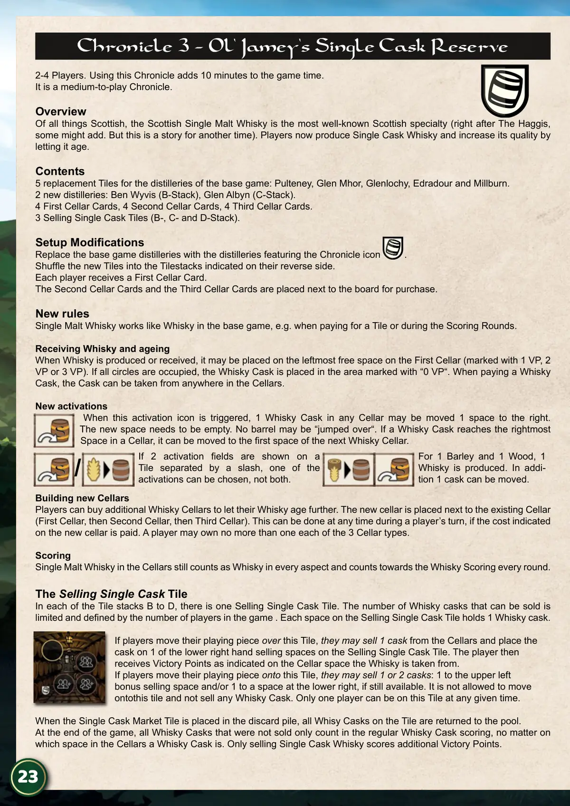
📝 第 24 页 AI 机翻对照（点击展开）
编年史3 - 老杰米的单一桶藏威士忌
2-4名玩家。使用此编年史会使游戏时间增加10分钟。
这是一个中等难度的编年史。
概述
在所有苏格兰事物中，苏格兰单一麦芽威士忌是最著名的苏格兰特产（有些人可能会说，在哈吉斯之后。但这是另一个时间的故事）。现在玩家生产单一桶藏威士忌，并通过让其陈年来提高其品质。
内容
5张基础游戏中蒸馏厂的替换板块：Pulteney、Glen Mhor、Glenlochy、Edradour和Millburn。
2个新蒸馏厂：Ben Wyvis（B型堆）、Glen Albyn（C型堆）。
4张第一酒窖卡、4张第二酒窖卡、4张第三酒窖卡。
3张销售单一桶藏板块（B型、C型和D型堆）。
设置修改
用带有编年史图标的蒸馏厂板块替换基础游戏中的蒸馏厂。
将新板块洗入其背面标示的板块堆中。
每位玩家获得一张第一酒窖卡。
第二酒窖卡和第三酒窖卡被放在版图旁边供购买。
新规则
单一麦芽威士忌在基础游戏中的工作方式与威士忌相同，例如在支付板块费用或计分轮期间。
接收威士忌和陈年
当生产或接收威士忌时，它可以放置在第一酒窖最左侧的空位上（标记为1 VP、2 VP或3 VP）。如果所有圆圈都被占用，则将威士忌桶放置在标记为"0 VP"的区域。支付威士忌桶时，可以从酒窖中的任何位置取走该桶。
新激活
当触发此激活图标时，可以将任何酒窖中的1个威士忌桶向右移动1个空间。
新空间必须为空。不能"跳过"任何桶。如果威士忌桶到达酒窖的最右侧空间，它可以移动到下一个威士忌酒窖的第一个空间。
建造新酒窖
玩家可以购买额外的威士忌酒窖，让他们的威士忌进一步陈年。新酒窖放置在现有酒窖旁边（第一酒窖，然后是第二酒窖，然后是第三酒窖）。这可以在玩家回合的任何时候完成，只要支付新酒窖上标示的费用。每位玩家每种酒窖类型最多只能拥有一个。
计分
酒窖中的单一麦芽威士忌在各方面仍被视为威士忌，并在每轮计入威士忌计分。
销售单一桶藏板块
在B到D的每个板块堆中，都有一张销售单一桶藏板块。可销售的威士忌桶数量有限，由游戏中的玩家数量决定。销售单一桶藏板块的每个空间可容纳1个威士忌桶。如果玩家将他们的棋子移动到此板块上，他们可以从酒窖中出售1个桶，并将该桶放置在销售单一桶藏板块右下角的1个销售空间上。然后
根据威士忌所取出的地窖空间上标示的胜利点数获得胜利点。
如果玩家将他们的棋子移动到此板块上，他们可以出售1或2桶威士忌：1桶到左上角的额外销售空间，和/或1桶到右下角的空间（如果仍然可用）。不允许移动到此板块而不出售任何威士忌桶。任何时候只能有一个玩家在此板块上。
当单桶威士忌市场板块被放入弃牌堆时，板块上的所有威士忌桶都会返回到公共池中。
游戏结束时，所有未售出的威士忌桶只计入常规威士忌桶计分，无论威士忌桶在地窖的哪个空间上。只有出售单桶威士忌才能获得额外的胜利点。
如果板块上显示由斜杠分隔的2个激活区域，可以选择其中一个激活，不能两个都选。
用1大麦和1木材，可以生产1威士忌。此外，可以移动1个桶。
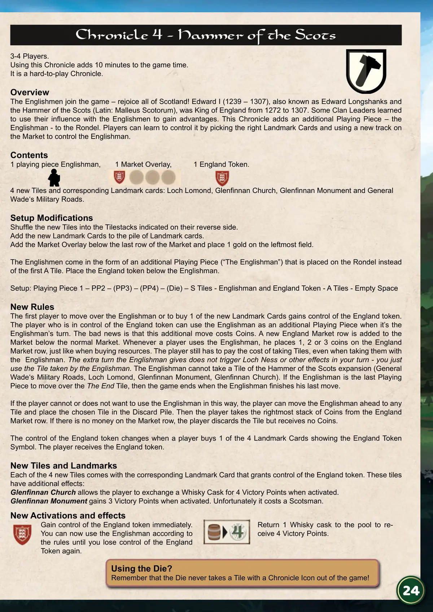
📝 第 25 页 AI 机翻对照（点击展开）
立即获得英格兰指示物的控制权。
你现在可以根据规则使用英国人，直到你再次失去英格兰指示物的控制权。
将1个威士忌桶返还到公共池中以获得4个胜利点。
编年史4 - 苏格兰之锤
3-4名玩家。
使用此编年史会使游戏时间增加10分钟。
这是一个难以游玩的编年史。
概览
英国人加入游戏 - 所有苏格兰人都欢呼！爱德华一世（1239-1307），也被称为长腿爱德华和苏格兰之锤（拉丁语：Malleus Scotorum），是1272年至1307年的英格兰国王。一些氏族领袖学会了利用他们对英国人的影响力来获得优势。此编年史在轮盘上增加了一个额外的棋子——英国人。玩家可以通过选择合适的地标卡和使用市场上的一条新轨道来控制英国人。
内容
1个英国人棋子，
1个市场覆盖物，
1个英格兰指示物。
4个新板块和相应的地标卡：洛蒙德湖（Loch Lomond）、格伦芬南教堂（Glenfinnan Church）、格伦芬南纪念碑（Glenfinnan Monument）和韦德将军的军事道路（General Wade's Military Roads）。
设置修改
将新板块洗入其背面指示的板块堆中。
将新的地标卡加入地标卡堆中。
将市场覆盖物添加到市场的最后一行下方，并在最左边的格子上放置1枚金币。
英国人以一个额外棋子（"英国人"）的形式出现，放置在轮盘上，而不是第一个A板块。将英格兰指示物放在英国人下方。
设置：棋子1 – PP2 – (PP3) – (PP4) – (骰子) – S板块 - 英国人和英格兰指示物 - A板块 - 空格
新规则
第一个移动到英国人上方或购买1张新地标卡的玩家将获得英格兰指示物的控制权。
控制英格兰指示物的玩家在英国人回合时可以将英国人用作额外棋子。坏消息是，这个额外移动需要花费金币。一个新的英国人市场行被添加到正常市场下方的市场中。每当玩家使用英国人时，他会在英国人市场行上放置1、2或3枚金币，就像购买资源时一样。即使使用英国人拿取板块，玩家仍需支付拿取板块的费用。英国人给予的额外回合不会触发你的回合中的尼斯湖或其他效果——你只是使用英国人拿取的板块。英国人不能拿取苏格兰之锤扩展的板块（韦德将军的军事道路、洛蒙德湖、格伦芬南纪念碑、格伦芬南教堂）。如果英国人是最后一个移动到终点的棋子，那么游戏将在英国人完成最后一次移动时结束。
如果玩家不能或不想以这种方式使用英国人，玩家可以将英国人移动到任意板块并将所选板块放入弃牌堆。然后玩家从英格兰市场行中拿取最右侧的一叠硬币。如果市场行上没有钱，玩家会弃掉该板块但不会获得任何硬币。
当玩家购买了4张展示英国人标记符号的地标卡中的1张时，英国人标记的控制权会改变。玩家会获得英国人标记。
新板块和地标
4张新板块中的每一张都附带相应的地标卡，该卡授予英国人标记的控制权。这些板块有额外效果：
Glenfinnan Church（格伦芬南教堂）允许玩家在激活时用1个威士忌桶换取4个胜利点。
Glenfinnan Monument（格伦芬南纪念碑）在激活时获得3个胜利点。不幸的是，它需要1个苏格兰人。
使用骰子？
记住骰子永远不会带编年图标的板块移出游戏！
新的激活和效果
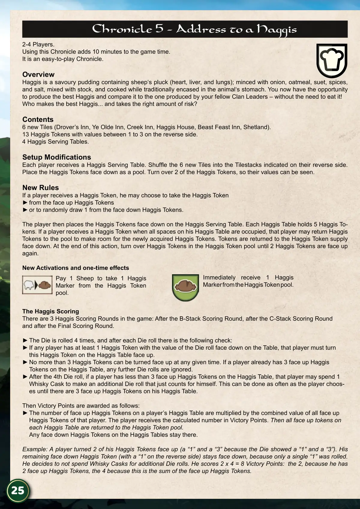
📝 第 26 页 AI 机翻对照（点击展开）
编年史5 - 致哈吉斯的致辞
2-4名玩家。
使用此编年史会使游戏时间增加10分钟。
这是一个易于游玩的编年史。
概述
哈吉斯是一种包含羊杂（心、肝和肺）的咸味布丁；与洋葱、燕麦、板油、香料和盐一起切碎，与肉汤混合，并在传统上用动物的胃包裹烹饪。你现在有机会制作最好的哈吉斯，并与你的氏族领袖同伴制作的产品进行比较——无需食用它！
谁制作的哈吉斯最好...并且承担了适量的风险？
内容
6个新板块（牧人客栈、古老客栈、溪流客栈、哈吉斯屋、盛宴客栈、设得兰）。
13个哈吉斯指示物，背面有1到3的数值。
4个哈吉斯服务桌。
设置修改
每位玩家获得一个哈吉斯服务桌。将6个新板块洗入其背面所示的牌库中。
将哈吉斯指示物面朝下放置成一个池。翻开2个哈吉斯指示物，使其数值可见。
新规则
如果玩家获得一个哈吉斯指示物，他可以选择从面朝上的哈吉斯指示物中获取，或者从面朝下的哈吉斯指示物中随机抽取1个。
然后玩家将哈吉斯指示物面朝下放在哈吉斯服务桌上。每个哈吉斯桌可容纳5个哈吉斯指示物。如果玩家在哈吉斯桌的所有空间都被占用时获得了一个哈吉斯指示物，该玩家可以将哈吉斯指示物返回到池中以腾出空间给新获得的哈吉斯指示物。指示物被面朝下返回到哈吉斯指示物供应中。在此行动结束时，翻开哈吉斯指示物池中的哈吉斯指示物，直到再次有2个哈吉斯指示物面朝上。
新的激活和一次性效果
哈吉斯计分
游戏中有3个哈吉斯计分轮：在B牌库计分轮后，在C牌库计分轮后，以及在最终计分轮后。
►骰子被掷4次，每次骰子掷出后进行以下检查：
►如果有任何玩家在桌面上有至少1个数值与骰子点数相同的面朝下的哈吉斯指示物，该玩家必须将这个哈吉斯指示物在哈吉斯桌上翻转为面朝上。
►任何时候最多只能有3个哈吉斯指示物被翻转为面朝上。如果玩家已经有3个面朝上的哈吉斯指示物在哈吉斯桌上，任何后续的骰子掷出都将被忽略。
►在第4次骰子掷出后，如果玩家在哈吉斯桌上的面朝上的哈吉斯指示物少于3个，该玩家可以花费1个威士忌桶进行额外的骰子掷出，这次掷出仅对他自己有效。只要玩家选择，可以重复此操作，直到他的哈吉斯桌上有3个面朝上的哈吉斯指示物。
然后按以下方式授予胜利点：
►玩家哈吉斯桌上的面朝上的哈吉斯指示物的数量乘以所有面朝上的
该玩家的哈吉斯指示物。玩家获得计算出的胜利点数。然后，每个哈吉斯桌上的所有正面朝上的指示物都会返回到哈吉斯指示物池中。
哈吉斯桌上的任何背面朝上的哈吉斯指示物都留在那里。
示例：一名玩家将他的2个哈吉斯指示物正面朝上（骰子显示"1"和"3"，所以是"1"和"3"）。他剩余的背面朝上的哈吉斯指示物（反面是"1"）保持背面朝上，因为只掷出了一个"1"。他决定不花费威士忌桶进行额外的骰子投掷。他获得2×4=8个胜利点：2点是因为他有2个正面朝上的哈吉斯指示物，4点是因为这是正面朝上的哈吉斯指示物的总和。
支付1只羊，从哈吉斯指示物池中拿取1个哈吉斯标记。
立即从哈吉斯指示物池中获得1个哈吉斯标记。
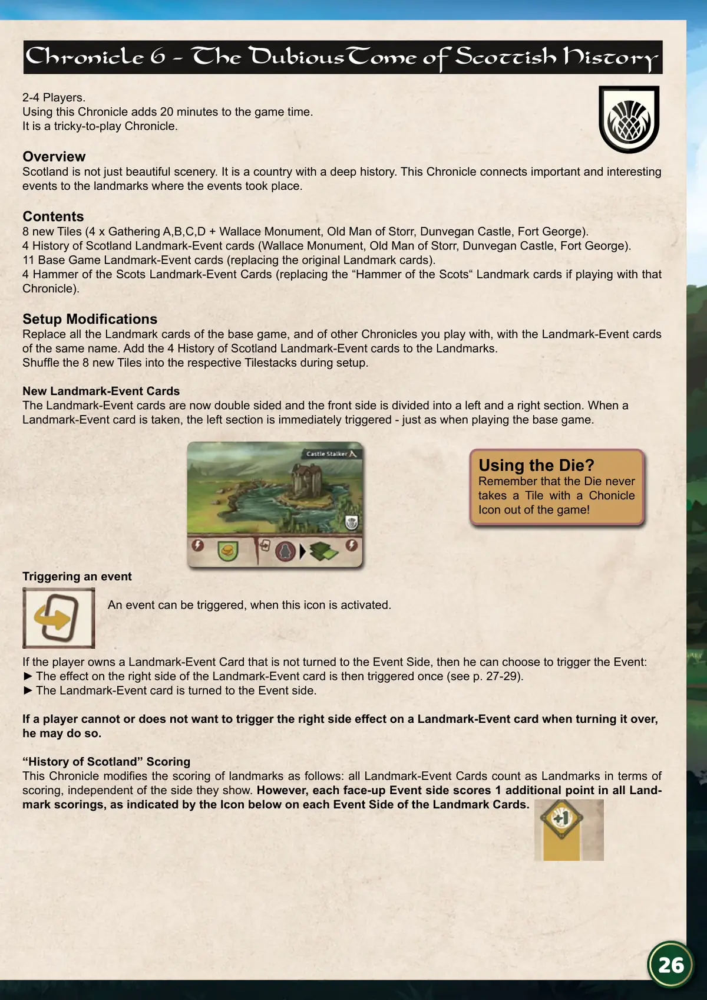
📝 第 27 页 AI 机翻对照（点击展开）
2-4名玩家。
使用这个编年史会使游戏时间增加20分钟。
这是一个难以驾驭的编年史。
概览
苏格兰不仅仅是美丽的风景。这是一个拥有深厚历史的国家。这个编年史将重要且有趣的事件与事件发生的地标联系起来。
内容
8个新板块（4个A、B、C、D集会 + 华莱士纪念碑、老人石、邓韦根城堡、乔治堡）。
4张苏格兰历史地标-事件卡（华莱士纪念碑、老人石、邓韦根城堡、乔治堡）。
11张基础游戏地标-事件卡（替换原始地标卡）。
4名苏格兰之锤地标-事件卡（如果使用该编年史，则替换"苏格兰之锤"地标卡）。
设置修改
将基础游戏和其他你正在使用的编年史中的所有地标卡替换为同名的地标-事件卡。将4张苏格兰历史地标-事件卡添加到地标中。
在设置期间将8个新板块洗入相应的牌堆。
新地标-事件卡
地标-事件卡现在是双面的，正面分为左右两部分。当获得一张地标-事件卡时，左侧部分会立即触发——就像玩基础游戏时一样。
触发事件
当这个图标被激活时，可以触发一个事件。
如果玩家拥有一张未翻到事件面的地标-事件卡，那么他可以选择触发该事件：
►然后触发地标-事件卡右侧部分的效果一次（见第27-29页）。
►将地标-事件卡翻到事件面。
如果玩家在翻转地标-事件卡时无法或不想触发右侧部分的效果，他可以选择不这样做。
"苏格兰历史"计分
这个编年史修改了地标的计分方式如下：就计分而言，所有地标-事件卡都算作地标，无论它们显示的是哪一面。然而，在所有地标计分中，每张正面朝上的事件面会额外获得1分，如每张地标卡事件面下方图标所示。
编年史6 - 苏格兰历史的可疑典籍
使用骰子？
请记住，骰子永远不会将带有编年史图标的板块移出游戏！
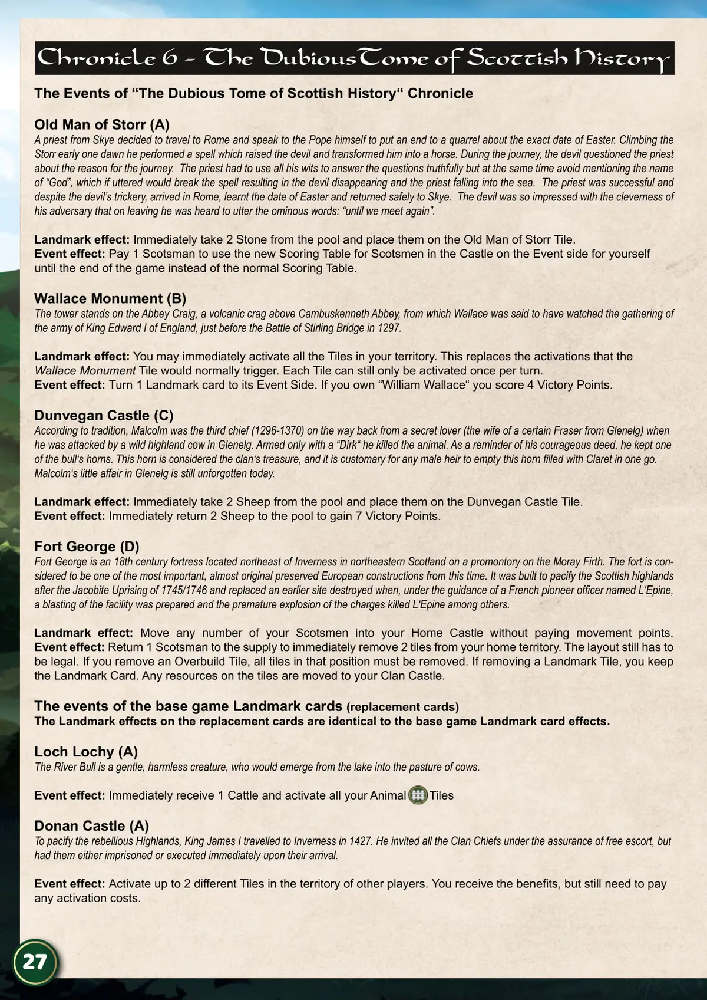
📝 第 28 页 AI 机翻对照（点击展开）
编年史6 - 苏格兰历史的可疑之书
"苏格兰历史的可疑之书"编年史事件
老人峰(A)
一位来自天空岛的牧师决定前往罗马亲自与教皇交谈，以结束关于复活节确切日期的争执。在一个黎明时分爬上老人峰，他施展了一个召唤魔鬼并将自己变成马的咒语。旅途中，魔鬼询问牧师旅行的原因。牧师必须运用全部智慧真实地回答问题，同时避免提及"上帝"这个名字，一旦说出这个名字就会打破咒语，导致魔鬼消失而牧师坠入海中。牧师成功了，尽管魔鬼诡计多端，他还是抵达了罗马，得知了复活节的日期，并安全地返回了天空岛。魔鬼对他对手的聪明才智印象深刻，在离开时据说听到了不祥的话语："我们后会有期"。
地标效果：立即从牌池中拿取2个石头，并将其放置在老人峰板块上。
事件效果：支付1个苏格兰人，让你在城堡的事件面使用新的苏格兰人计分表，直到游戏结束，而不是使用正常的计分表。
华莱士纪念碑(B)
这座塔楼位于阿比克雷格山上，这是一座位于坎布斯基内斯修道院上方的火山岩，据说华莱士曾在这里观看英格兰国王爱德华一世的军队集结，就在1297年斯特灵桥战役之前。
地标效果：你可以立即激活你领土内的所有板块。这取代了华莱士纪念碑板块通常会触发的激活。每个板块每回合仍只能激活一次。
事件效果：将1个地标卡翻到事件面。如果你拥有"威廉·华莱士"，你获得4个胜利点。
邓韦根城堡(C)
根据传统，马尔科姆是第三任酋长(1296-1370)，在从秘密情人(格伦尔格某弗雷泽的妻子)返回途中，他在格伦尔格被一头野生高地牛袭击。他仅用一把"匕首"就杀死了这头动物。作为他英勇事迹的纪念，他保留了其中一只牛角。这个牛角被视为部族的宝藏，任何男性继承人都有习惯性地一口气喝完装着克莱红酒的这个牛角。马尔科姆在格伦尔格的小插曲至今仍未被遗忘。
地标效果：立即从牌池中拿取2只绵羊，并将其放置在邓韦根城堡板块上。
事件效果：立即将2只绵羊返还到牌池以获得7个胜利点。
乔治堡(D)
乔治堡是18世纪的堡垒，位于苏格兰东北部因弗内斯东北部，莫里湾的一个海角上。这座堡垒是-
被认为是这个时期最重要、几乎完好保存的欧洲建筑之一。它建于1745/1746年詹姆斯党起义之后，旨在平息苏格兰高地，并取代了一个更早期的遗址。该遗址在一位名为L'Epine的法国先驱军官的指导下被摧毁，当时他们准备爆破该设施，但炸药提前爆炸，导致L'Epine等人死亡。
地标效果：将任意数量的苏格兰人移入你的主城堡，无需支付移动点数。
事件效果：将1个苏格兰人返还到供应池，以立即从你的领土上移除2个板块。布局仍必须合法。如果移除一个叠加板块，该位置的所有板块都必须被移除。如果移除一个地标板块，你可以保留地标卡。板块上的任何资源都会被移至你的氏族城堡。
基础游戏地标卡事件（替换卡）
替换卡上的地标效果与基础游戏地标卡效果相同。
洛奇洛奇湖(A)
牛河是一种温顺无害的生物，它会从湖中出来进入奶牛的牧场。
事件效果：立即获得1头牛并激活你所有的动物板块
多南城堡(A)
为了平息叛乱的高地，詹姆斯一世国王于1427前往因弗内斯。他在保证有自由护卫的情况下邀请了所有氏族首领，但他们在到达后立即被监禁或处决。
事件效果：激活最多2个位于其他玩家领土上的不同板块。你获得收益，但仍需支付任何激活费用。
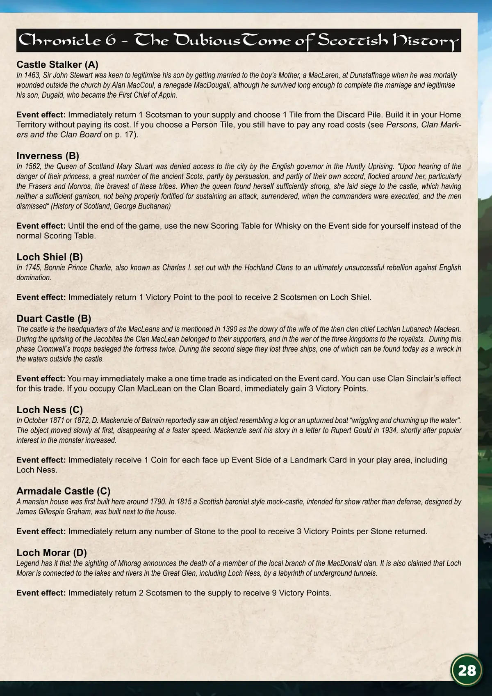
📝 第 29 页 AI 机翻对照（点击展开）
编年史6 - 苏格兰历史的可疑之书
斯塔克城堡 (A)
1463年，约翰·斯图尔特爵士渴望通过与其子的母亲麦克拉伦在邓斯塔夫纳奇结婚来使其子合法化，但当他在教堂外被叛逃的道格拉斯人艾伦·麦考尔致命刺伤时，他幸存下来并完成了婚姻，使其子杜加尔德合法化，后者成为了阿平的第一任酋长。
事件效果：立即将1个苏格兰人归还到你的供应区，并从弃牌堆中选择1个板块。在你的本土领土上建造它，无需支付其费用。如果你选择人物板块，你仍需支付任何道路费用（参见第17页的人物、氏族标记和氏族板块）。
因弗内斯 (B)
1562年，苏格兰女王玛丽·斯图尔特在亨特利起义中被英国总督拒绝进入该市。"当公主身处险境的消息传开后，大批古代苏格兰人，部分出于劝说，部分出于自愿，聚集在她周围，特别是弗莱泽人和门罗斯人，这些部落中最勇敢的。当女王感到自己足够强大时，她围攻了城堡，城堡既没有足够的驻军，也没有适当的防御工事来抵御攻击，于是投降了，指挥官被处决，士兵被遣散"（苏格兰史，乔治·布坎南）
事件效果：直到游戏结束，为你自己使用事件侧面的威士忌新计分表，而不是常规计分表。
洛赫希尔 (B)
1745年，查尔斯一世，也被称为"英俊的王子查理"，与高地氏族一起出发，最终反抗英国统治的起义失败了。
事件效果：立即将1个胜利点返还到公共池中，以在洛赫希尔上获得2个苏格兰人。
杜尔特城堡 (B)
这座城堡是麦克莱恩氏族的总部，在1390年被提及为当时氏族首领拉克兰·卢班纳奇·麦克莱恩妻子的嫁妆。在詹姆斯党人起义期间，麦克莱恩氏族属于他们的支持者，在三王国战争中属于保皇党。在这一阶段，克伦威尔的军队两次围攻这座堡垒。在第二次围攻中，他们损失了三艘船，其中一艘今天可以在城堡外的水域作为残骸找到。
事件效果：你可以立即按照事件卡上的指示进行一次性交易。你可以使用辛克莱氏族的效果进行这次交易。如果你在氏族板块上占领了麦克莱恩氏族，立即获得3个胜利点。
洛赫尼思 (C)
1871年或1872年10月，巴尔宁的D.麦肯齐 reportedly 看到一个类似于原木或翻倒的船的物体"在水里扭动和翻腾"。该物体起初缓慢移动，然后以更快的速度消失。麦肯齐在1934年给鲁珀特·古尔德写了一封信，讲述了这个故事，当时这个故事刚刚流行起来
对怪物的兴趣增加了。
事件效果：立即根据你游戏区中正面朝上的事件面地标卡（包括尼斯湖）每张获得1枚金币。
阿玛代尔城堡（C）
大约在1790年，这里首次建造了一座宅邸。1815年，由詹姆斯·吉莱斯皮·格雷厄姆设计的一座苏格兰男爵风格仿城堡（用于展示而非防御）建在宅邸旁边。
事件效果：立即将任意数量的石头返还到资源池中，每返还1个石头获得9个胜利点。
洛莫湖（D）
传说看到莫拉格预示着当地麦克唐纳氏族一员的死亡。也有人声称洛莫湖通过迷宫般的地下隧道与大峡谷中的湖泊和河流相连，包括尼斯湖。
事件效果：立即将2个苏格兰人返还到供应区，获得9个胜利点。
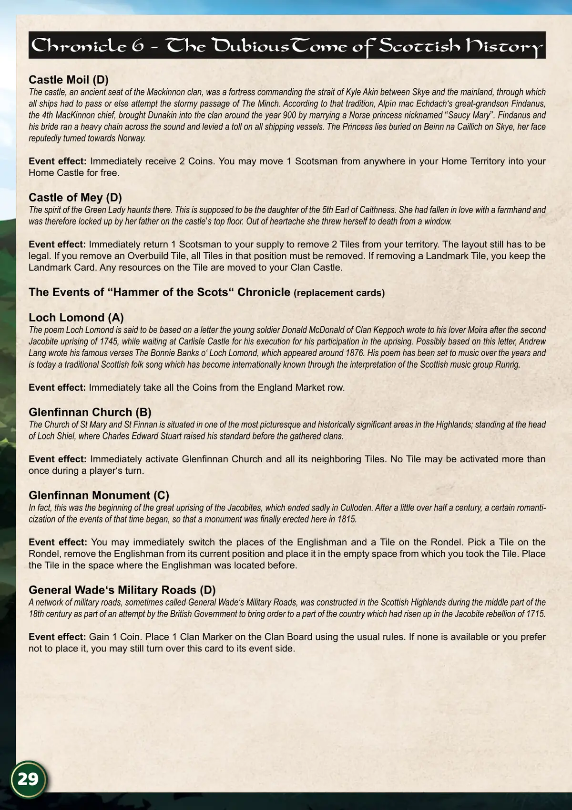
📝 第 30 页 AI 机翻对照（点击展开）
莫伊尔城堡 (D)
这座城堡是麦金农氏族的古老据点，是一座要塞，控制着天空岛与苏格兰本土之间的凯尔艾金海峡，所有船只都必须通过这里，否则就得尝试穿越汹涌的明奇海峡。根据传统，阿尔平·麦克·埃查德的曾孙，第四任麦金农首领芬达努斯，大约在公元900年通过与一位被称为"活泼玛丽"的挪威公主结婚，将邓金城堡纳入了氏族。芬达努斯和他的新娘在海峡上拉起了一条沉重的铁链，对所有过往船只征收通行费。公主埋葬在天空岛的贝恩纳凯利赫山上，据说她的面朝向挪威。
事件效果：立即获得2枚金币。你可以免费将1名苏格兰人从你的家园领土的任何位置移动到你的家园城堡。
梅城堡 (D)
绿女士的幽灵在那里出没。据说她是凯恩斯第五代伯爵的女儿。她爱上了一个农场工人，因此被父亲关在城堡的顶层。因心碎，她从窗户跳下身亡。
事件效果：立即将1名苏格兰人归还到你的供应区，以移除你领土上的2个板块。布局必须仍然合法。如果移除一个上层建筑板块，该位置的所有板块都必须被移除。如果移除一个地标板块，你可以保留地标卡。板块上的任何资源都会被移动到你的氏族城堡。
"苏格兰之锤"编年史事件卡（替代卡）
洛蒙德湖 (A)
据说《洛蒙德湖》这首诗是基于年轻的唐纳德·麦克唐纳（属于凯普氏族）在1745年第二次詹姆斯党起义后，在卡莱尔城堡等待因参与起义而被处决时，写给他的情人莫伊拉的一封信。安德鲁·兰可能基于这封信写下了著名的诗句《洛蒙德湖美丽的湖岸》，该诗大约出现在1876年。多年来，他的诗被谱成曲，如今已成为一首传统的苏格兰民歌，通过苏格兰音乐组合Runrig的诠释而闻名于世。
事件效果：立即从英格兰市场行拿走所有的金币。
格伦芬南教堂 (B)
圣玛丽和圣芬南教堂位于高地最风景如画且历史意义最重大的地区之一；它坐落在希尔湖的湖头，在那里，查尔斯·爱德华·斯图亚特在聚集的氏族面前举起了他的旗帜。
事件效果：立即激活格伦芬南教堂及其所有相邻板块。在玩家的回合中，任何板块都不能被激活超过一次。
格伦芬南纪念碑 (C)
事实上，这是詹姆斯党大起义的开端，最终以卡洛登的悲剧告终。半个多世纪后，某位浪漫主义-
对当时事件的纪念化始于1815年，最终在此地建立了一座纪念碑。
事件效果：你可以立即交换英国人（Englishman）和轮盘（Rondel）上一块板块（Tile）的位置。选择轮盘上的一块板块，将英国人从当前位置移除，并将其放置在你取走板块后留下的空位中。将板块放置在英国人之前所在的位置。
韦德将军的军事道路（D）
在18世纪中叶，英国政府修建了一个军事道路网络，有时被称为韦德将军的军事道路，作为试图将秩序带到该国在1715年雅各布叛乱中起义的高地地区的一部分。
事件效果：获得1枚金币。按照常规规则在氏族版图（Clan Board）上放置1个氏族标记（Clan Marker）。如果没有可用的标记或你选择不放置，你仍然可以将这张牌翻到其事件面。
编年史6 - 苏格兰历史的可疑典籍
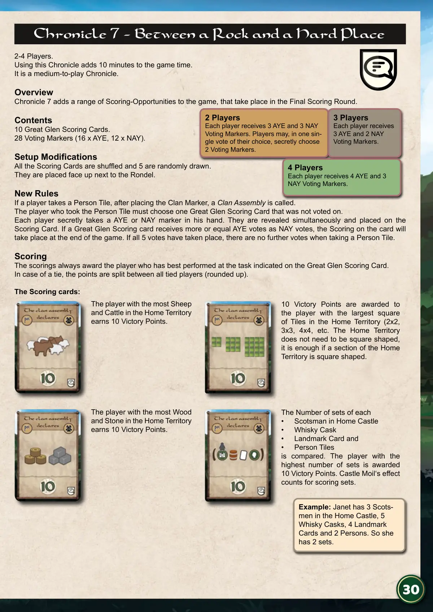
📝 第 31 页 AI 机翻对照（点击展开）
编年史7 - 进退两难
2-4名玩家。
使用此编年史会使游戏时间增加10分钟。
这是一个中等难度的编年史。
概览
编年史7为游戏增加了多种计分机会，这些机会在最终计分轮进行。
内容
10张大峡谷计分卡。
28张投票标记（16张赞成，12张反对）。
设置修改
所有计分牌被洗混，然后随机抽取5张。
它们被面朝上放置在轮盘旁边。
新规则
如果玩家获得一张人物板块，在放置氏族标记后，将召开氏族集会。
获得人物板块的玩家必须选择一张未被投票的大峡谷计分卡。
每个玩家秘密地在手中持有一张赞成或反对标记。它们被同时揭示并放置在计分卡上。如果一张大峡谷计分卡获得的赞成票数大于或等于反对票数，该计分卡上的计分将在游戏结束时进行。如果所有5次投票都已进行，那么在获得人物板块时将不再进行投票。
计分
计分总是奖励在大峡谷计分卡上指示的任务中表现最佳的玩家。
如果出现平局，分数将在所有平局玩家之间分配（向上取整）。
计分卡：
拥有最多
绵羊和牛
在本土领地的玩家
获得10个胜利点。
拥有最多
木材和石头
在本土领地的玩家
获得10个胜利点。
10个胜利点奖励给
在本土领地拥有最大
方形板块区域的玩家（2x2、
3x3、4x4等）。本土领地
不需要是正方形形状，
只要本土领地的一部分
是正方形形状即可。
比较每种套牌的数量
•
本土城堡中的苏格兰人
•
威士忌桶
•
地标卡
•
人物板块
玩家拥有最多套牌数量的将获得10个胜利点。城堡莫伊尔的效果在计算套牌数量时有效。
2名玩家
每位玩家获得3张赞成和3张反对投票标记。玩家可以在他们选择的一次单独投票中，秘密选择2张投票标记。
3名玩家
每位玩家获得
3张赞成和2张反对
投票标记。
4名玩家
每位玩家获得4张赞成和3张
反对投票标记。
示例：珍妮特在本土城堡中有3名苏格兰人，5个威士忌桶，4张地标卡和2个人物板块。所以她有2套牌。
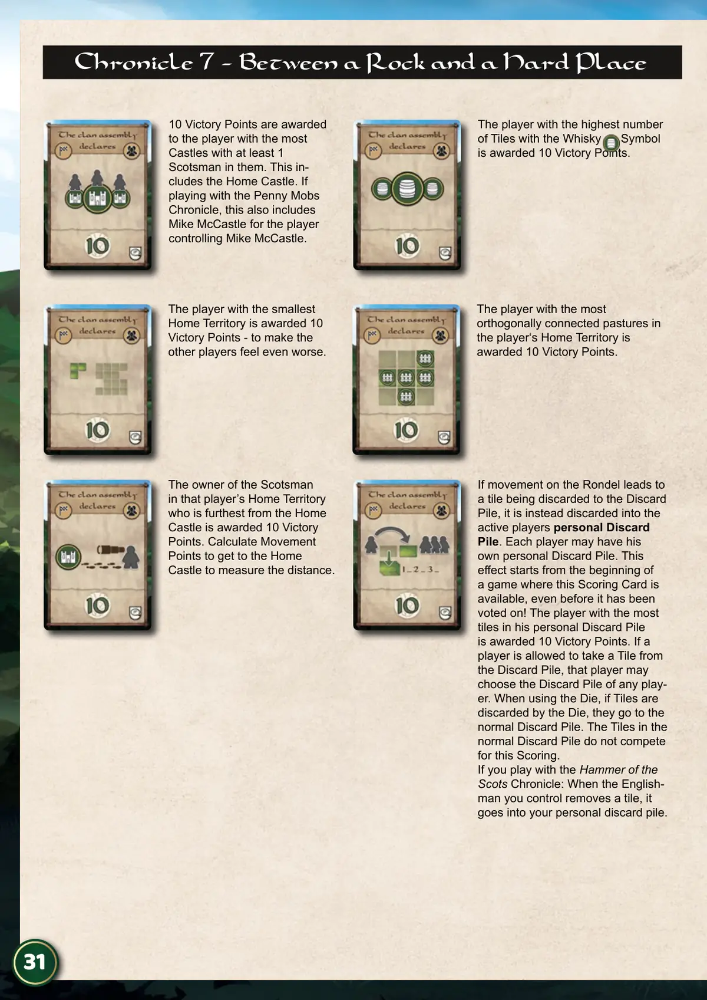
📝 第 32 页 AI 机翻对照（点击展开）
编年史7 - 进退两难
10个胜利点
授予拥有最多城堡
且至少有1个苏格兰人
的玩家。这包括
主城堡。如果使用
"便士暴民"编年史，
这也包括控制迈克·麦卡斯特尔
的玩家所控制的迈克·麦卡斯特尔。
拥有带有威士忌
符号的板块数量最多的
玩家获得10个胜利点。
该玩家主领土中
苏格兰人距离主城堡
最远的所有者获得10个
胜利点。计算移动点数
到达主城堡以测量距离。
如果轮盘上的移动导致
板块被弃入弃牌堆，
则改为弃入当前玩家的
个人弃牌堆。每位玩家可以
拥有自己的个人弃牌堆。这个效果
从这张计分卡可用的游戏开始时就生效，
甚至在它被投票通过之前！拥有最多
个人弃牌堆中板块的玩家
获得10个胜利点。如果玩家
允许从弃牌堆中拿取板块，
该玩家可以选择任何玩家的
弃牌堆。使用骰子时，如果板块
因骰子被弃置，它们进入普通
弃牌堆。普通弃牌堆中的板块
不参与此计分竞争。
如果你使用"苏格兰人之锤"编年史：
当你控制的英国人移除一个板块时，
它进入你的个人弃牌堆。
拥有最小主领土的玩家
获得10个胜利点 - 让其他玩家
感觉更糟糕。
在玩家的主领土中拥有最多
正交连接牧场的玩家
获得10个胜利点。
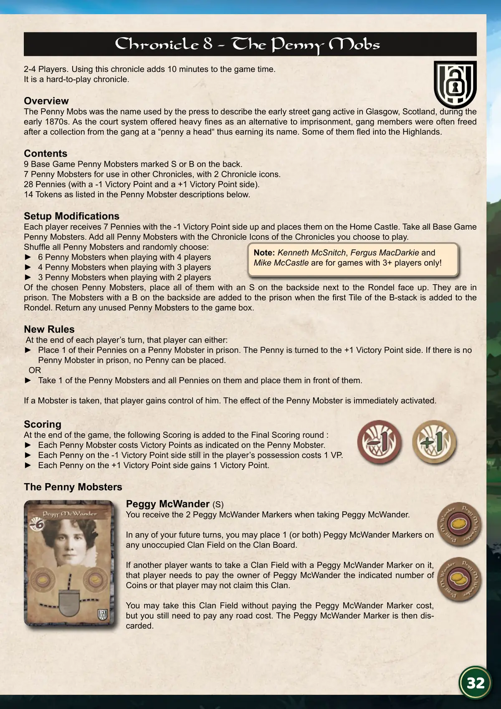
📝 第 33 页 AI 机翻对照（点击展开）
编年史8 - 便士帮派
2-4名玩家。使用此编年史会增加10分钟的游戏时间。
这是一款难以游玩的编年史。
概述
"便士帮派"是媒体用来描述1870年代初活跃于苏格兰格拉斯哥的早期街头帮派的名称。由于法院系统将高额罚款作为监禁的替代方案，帮派成员常常通过帮派每人"一分钱"的集资后被释放，因此得名。其中一些人逃往了高地。
内容
9个基础游戏便士帮派成员，背面标记为S或B。
7个用于其他编年史的便士帮派成员，带有2个编年史图标。
28个便士（一面为-1胜利点，一面为+1胜利点）。
14个指示物，如下文便士帮派描述中所列。
设置修改
每位玩家获得7个-1胜利点面朝上的便士，并将其放置在主城堡上。取走所有基础游戏便士帮派。添加所有带有您选择游玩的编年史图标的便士帮派。
洗混所有便士帮派，随机选择：
►4人游戏时选择6个便士帮派
►3人游戏时选择4个便士帮派
►2人游戏时选择3个便士帮派
在选中的便士帮派中，将所有背面标记为S的便士帮派放在轮盘正面旁边。他们入狱了。背面标记为B的便士帮派会在B堆的第一个板块添加到轮盘时加入监狱。将任何未使用的便士帮派放回游戏盒。
新规则
在每位玩家回合结束时，该玩家可以：
►将1个自己的便士放在监狱中的便士帮派上。便士翻转为+1胜利点面。如果没有便士帮派在监狱中，则不能放置便士。
或者
►取走1个便士帮派和其上的所有便士，并将它们放在自己面前。
如果取走了一个帮派，该玩家将获得他的控制权。便士帮派的效果立即激活。
计分
在游戏结束时，以下计分将添加到最终计分轮中：
►每个便士帮派按照便士帮派上标示的胜利点数计算。
►玩家手中仍处于-1胜利点面的每个便士花费1 VP。
►处于+1胜利点面的每个便士获得1胜利点。
便士帮派
佩吉·麦克万德(S)
当你取走佩吉·麦克万德时，你将获得2个佩吉·麦克万德指示物。
在你的任何未来回合中，你可以将1个（或两个）佩吉·麦克万德指示物放置在氏族版图上任何未被占用的氏族领地上。
如果其他玩家想要取走带有佩吉·麦克万德指示物的氏族领地，该玩家需要向佩吉·麦克万德的所有者支付标示数量的金币，否则该玩家不能宣称此氏族。
你可以无需支付佩吉·麦克万德指示物费用而取走此氏族领地，
但你仍需支付任何道路费用。然后，佩姬·麦克万德指示物被弃置。
注意：肯尼斯·麦克斯尼奇、弗格斯·麦克达基和麦克·麦卡斯特尔仅适用于3人及以上的游戏！
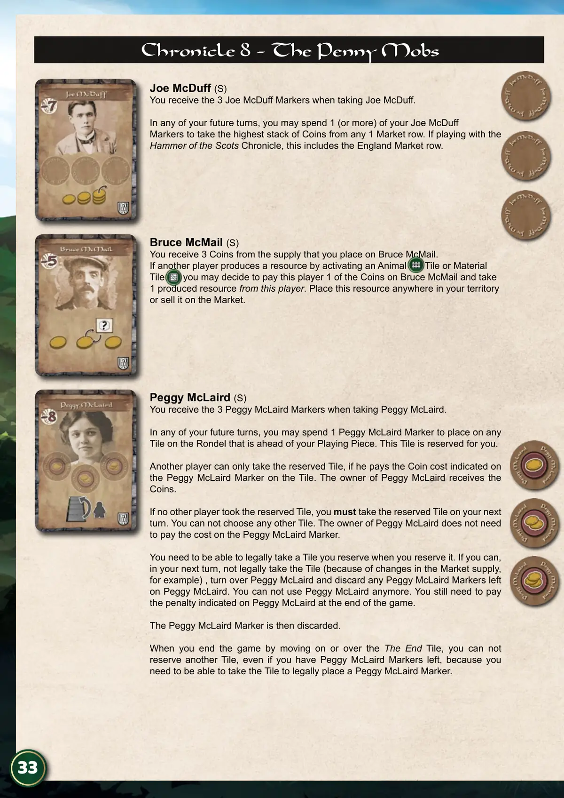
📝 第 34 页 AI 机翻对照（点击展开）
编年史8 - 便士帮派
Joe McDuff (S)
当你选择 Joe McDuff 时，你获得 3 个 Joe McDuff 指示物。
在你的任何未来回合中，你可以花费 1 个（或更多）你的 Joe McDuff 指示物，从任意 1 个市场行中获取最高的硬币堆。如果正在玩《苏格兰之锤》编年史，这包括英格兰市场行。
Bruce McMail (S)
你从供应区获得 3 个硬币，将其放置在 Bruce McMail 上。
如果其他玩家通过激活动物板块或材料板块来生产资源，你可以决定支付 Bruce McMail 上的 1 个硬币给该玩家，并从该玩家处获取 1 个已生产的资源。将此资源放置在你的领土上的任何位置或在市场上出售。
Peggy McLaird (S)
当你选择 Peggy McLaird 时，你获得 3 个 Peggy McLaird 指示物。
在你的任何未来回合中，你可以花费 1 个 Peggy McLaird 指示物，放置在你的棋子前方环形轮盘上的任意板块上。这个板块为你保留。
只有当其他玩家支付板块上 Peggy McLaird 指示物上标明的硬币费用时，才能获取这个保留的板块。Peggy McLaird 的所有者获得这些硬币。
如果没有其他玩家获取保留的板块，你必须在你的下一个回合获取这个保留的板块。你不能选择任何其他板块。Peggy McLaird 的所有者不需要支付 Peggy McLaird 指示物上的费用。
当你保留板块时，你必须能够合法地获取它。如果你在下一个回合无法合法地获取该板块（例如由于市场供应的变化），则翻转 Peggy McLaird 并丢弃 Peggy McLaird 上剩余的任何 Peggy McLaird 指示物。你不能再使用 Peggy McLaird。你仍然需要在游戏结束时支付 Peggy McLaird 上标明的惩罚。
然后，Peggy McLaird 指示物被弃置。
当你通过移动到或越过《结束》板块来结束游戏时，你不能保留另一个板块，即使你还有剩余的 Peggy McLaird 指示物，因为你需要能够获取板块才能合法地放置 Peggy McLaird 指示物。
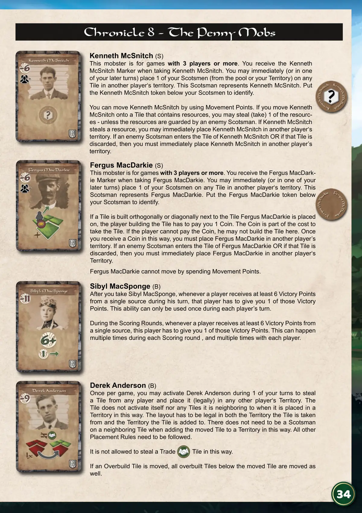
📝 第 35 页 AI 机翻对照（点击展开）
编年史8 - 便士帮派
肯尼思·麦克斯尼奇 (S)
这个黑帮分子适用于3人或以上的游戏。当你获得肯尼思·麦克斯尼奇时，你会获得肯尼思·麦克斯尼奇指示物。你可以立即（或在之后的某个回合）将你的1个苏格兰人（从公共池或你的领土中）放置在任何其他玩家的板块上。这个苏格兰人代表肯尼思·麦克斯尼奇。将肯尼思·麦克斯尼奇指示物放在你的苏格兰人下方以作标识。
你可以通过使用移动点数来移动肯尼思·麦克斯尼奇。如果你将肯尼思·麦克斯尼奇移动到一个包含资源的板块上，你可以偷取（拿取）1个资源 - 除非这些资源被敌方苏格兰人守护。如果肯尼思·麦克斯尼奇偷取了一个资源，你可以立即将肯尼思·麦克斯尼奇放置在另一个玩家的领土上。如果敌方苏格兰人进入肯尼思·麦克斯尼奇所在的板块，或者该板块被弃置，那么你必须立即将肯尼思·麦克斯尼奇放置在另一个玩家的领土上。
西比尔·麦克斯庞奇 (B)
在你获得西比尔·麦克斯庞奇后，每当一个玩家在他的回合中从单一来源获得至少6个胜利点时，该玩家必须给你1个这些胜利点。这个能力在每个玩家的回合中只能使用一次。
在计分轮中，每当一个玩家从单一来源获得至少6个胜利点时，该玩家必须给你1个这些胜利点。这在每个计分轮中可能发生多次，并且对每个玩家都可能发生多次。
德里克·安德森 (B)
每局游戏一次，你可以在你的一个回合中激活德里克·安德森，从任何玩家那里偷取一个板块并将其（合法地）放置在任何其他玩家的领土中。当板块以这种方式放置在领土中时，该板块本身及其相邻的板块都不会自动激活。布局在被偷取板块的领土和被添加板块的领土中都必须是合法的。以这种方式将移动的板块添加到领土中时，相邻板块上不需要有苏格兰人。需要遵循所有其他放置规则。
不允许以这种方式偷取贸易板块。
如果移动了一个建造板块，被移动板块下方的所有建造板块也会一起移动。
弗格斯·麦克达基 (S)
这个黑帮分子适用于3人或以上的游戏。当你获得弗格斯·麦克达基时，你会获得弗格斯·麦克达基指示物。你可以立即（或在之后的某个回合）将你的1个苏格兰人放置在任何其他玩家的板块上。这个苏格兰人代表弗格斯·麦克达基。将弗格斯·麦克达基指示物放在你的苏格兰人下方以作标识。
如果一个板块在正交或对角方向上建造在弗格斯·麦克达基所在板块的旁边，建造该板块的玩家必须支付你1枚硬币。这枚硬币是建造成本的一部分。
拿取板块。如果玩家无法支付硬币，他不能在此建造板块。一旦你以这种方式收到一枚硬币，你必须将费格斯·麦克达基(Fergus MacDarkie)放置在另一位玩家的领土上。如果敌方苏格兰人进入费格斯·麦克达基的板块，或者该板块被弃置，那么你必须立即将费格斯·麦克达基放置在另一位玩家的领土上。
费格斯·麦克达基不能通过消耗移动点来移动。
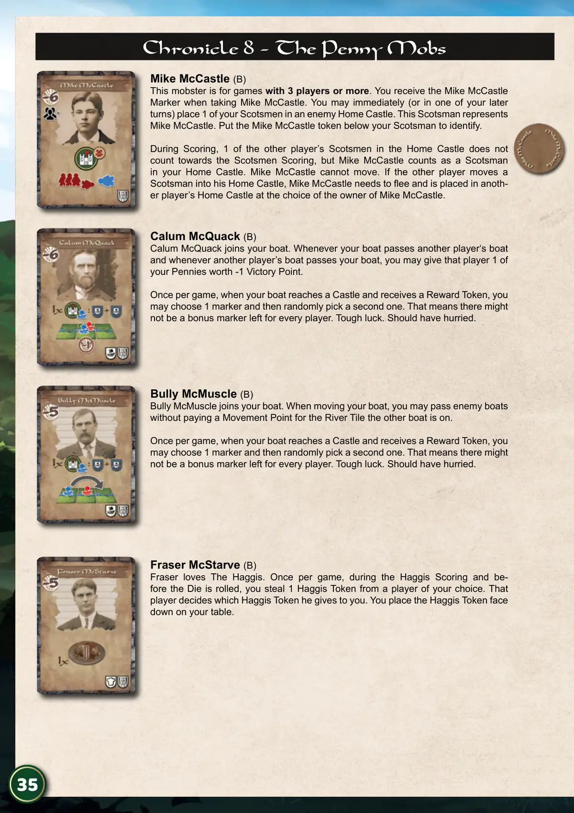
📝 第 36 页 AI 机翻对照（点击展开）
编年史8 - 便士帮派
迈克·麦卡斯尔 (B)
这个黑帮成员适用于3人或以上的游戏。当你选择迈克·麦卡斯尔时，你将获得迈克·麦卡斯尔指示物。你可以立即（或在之后的某个回合）将你的1个苏格兰人放置在敌方的主城堡中。这个苏格兰人代表迈克·麦卡斯尔。将迈克·麦卡斯尔指示物放在你的苏格兰人下方以作标识。
在计分时，其他玩家在主城堡中的1个苏格兰人不计入苏格兰人计分，但迈克·麦卡斯尔在你主城堡中算作一个苏格兰人。迈克·麦卡斯尔不能移动。如果其他玩家将一个苏格兰人移动到他的主城堡中，迈克·麦卡斯尔必须逃离，并由迈克·麦卡斯尔的所有者选择放置在另一个玩家的主城堡中。
卡伦·麦克夸克 (B)
卡伦·麦克夸克加入你的船只。每当你的船只经过其他玩家的船只，以及每当其他玩家的船只经过你的船只时，你可以给该玩家1个你的价值-1胜利点的便士。
每局游戏一次，当你的船只到达城堡并获得奖励指示物时，你可以选择1个指示物，然后随机抽取第二个。这意味着可能没有足够的奖励指示物给每个玩家。运气不好。本该快点才对。
巴利·麦克马斯尔 (B)
巴利·麦克马斯尔加入你的船只。在移动你的船只时，你可以不支付敌方船只所在河板块的移动点数就经过敌方船只。
每局游戏一次，当你的船只到达城堡并获得奖励指示物时，你可以选择1个指示物，然后随机抽取第二个。这意味着可能没有足够的奖励指示物给每个玩家。运气不好。本该快点才对。
弗雷泽·麦克斯塔夫 (B)
弗雷泽 loves The Haggis。每局游戏一次，在哈吉斯计分期间且骰子未掷出前，你可以从你选择的玩家那里偷取1个哈吉斯指示物。该玩家决定给你哪个哈吉斯指示物。你将哈吉斯指示物面朝下放在你的桌面上。
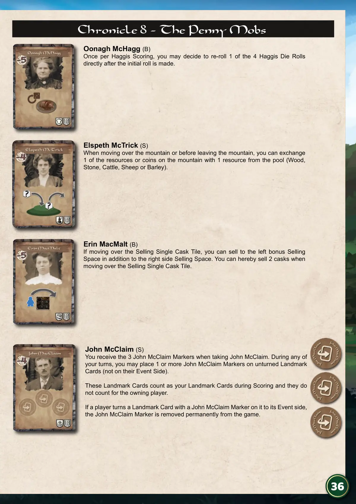
📝 第 37 页 AI 机翻对照（点击展开）
埃尔丝·麦克特里克 (S)
在翻越山脉或离开山脉之前，你可以将山脉上的1个资源或金币与池中的1个资源（木材、石头、牛、羊或大麦）进行交换。
艾琳·麦克麦尔特 (B)
如果翻越"销售单桶酒"板块，除了右侧的销售空间外，你还可以向左侧的奖励销售空间销售。因此，当翻越"销售单桶酒"板块时，你可以销售2桶酒。
约翰·麦克克莱姆 (S)
当你选择约翰·麦克克莱姆时，你将获得3个约翰·麦克克莱姆指示物。在你的任何一个回合中，你可以将1个或多个约翰·麦克克莱姆指示物放在未翻开的地标卡上（不是在它们的事件面）。
在计分时，这些地标卡算作你的地标卡，它们不计入拥有玩家的分数。
如果玩家将带有约翰·麦克克莱姆指示物的地标卡翻到事件面，约翰·麦克克莱姆指示物将永久从游戏中移除。
奥娜·麦克哈格 (B)
在哈吉斯计分时，你可以在初始投掷后决定重新投掷4个哈吉斯骰子中的1个。
编年史8 - 便士暴民
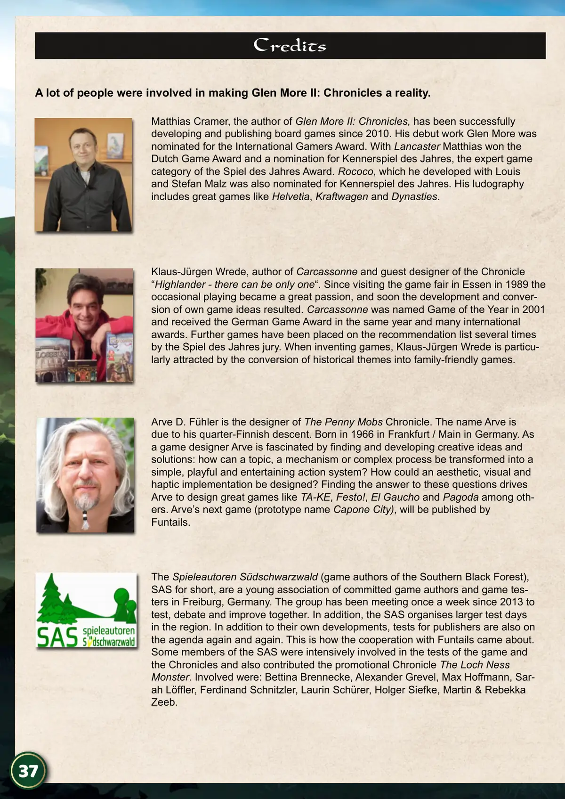
📝 第 38 页 AI 机翻对照（点击展开）
致谢
许多人都参与了《格伦莫尔II：编年史》的制作。
《格伦莫尔II：编年史》的作者 Matthias Cramer 自 2010 年以来一直在成功开发和出版桌游。他的处女作《格伦莫尔》(Glen More) 获得了国际玩家奖(International Gamers Award)提名。凭借《兰卡斯特》(Lancaster)，Matthias 赢得了荷兰游戏奖(Dutch Game Award)和德国年度游戏专家奖(Kennerspiel des Jahres)提名。他与 Louis 和 Stefan Malz 共同开发的《洛可可》(Rococo) 也获得了德国年度游戏专家奖提名。他的游戏作品包括《赫尔维蒂亚》(Helvetia)、《动力车》(Kraftwagen) 和《王朝》(Dynasties) 等优秀游戏。
《卡卡颂》(Carcassonne) 的作者 Klaus-Jürgen Wrede，也是"高地人 - 只能有一个"(Highlander - there can be only one)编年史的客座设计师。自 1989 年参观埃森游戏展(Essen)以来，偶尔的游戏游玩变成了一项极大的热情，很快，开发和完善自己的游戏想法也随之而来。《卡卡颂》在 2001 年被评为年度游戏，并于同年获得德国游戏奖(German Game Award)以及许多国际奖项。此外，他的多款游戏多次被德国年度游戏奖评审委员会列入推荐名单。在设计游戏时，Klaus-Jürgen Wrede 特别着迷于将历史主题转化为适合家庭的游戏。
Arve D. Fühler 是"便士暴民编年史"(The Penny Mobs Chronicle)的设计师。Arve 这个名字源于他有四分之一的芬兰血统。1966 年出生于德国美因河畔法兰克福。作为一名游戏设计师，Arve 着迷于寻找和开发创意想法和解决方案：如何将一个主题、一种机制或复杂的过程转化为简单、有趣且富有娱乐性的行动系统？如何设计出具有美学、视觉和触觉感的实现方式？找到这些问题的答案驱使 Arve 设计出了《TA-KE》、《Festo!》、《牛仔》(El Gaucho)和《宝塔》(Pagoda)等优秀游戏。Arve 的下一款游戏（暂定名"卡彭城"(Capone City)）将由 Funtails 出版社发行。
施皮莱奥图恩南施瓦茨瓦尔德(Spieleautoren Südschwarzwald)（简称 SAS）是德国弗莱堡(Freiburg)一家致力于游戏设计和游戏测试的年轻协会。该小组自 2013 年以来每周聚会一次，共同测试、讨论和改进游戏。此外，SAS 还在组织区域内的更大规模测试日。除了自己的开发项目外，他们也经常为出版社进行测试。正是这样，与 Funtails 的合作得以建立。SAS 的部分成员深度参与了游戏和编年史的测试，并贡献了宣传编年史"尼斯湖水怪"(The Loch Ness Monster)。参与人员包括：Bettina Brennecke、Alexander Grevel、Max Hoffmann、Sarah Löffler、Ferdinand Schnitzler、Laurin Schürer、Holger Siefke、Martin & Rebekka Zeeb。
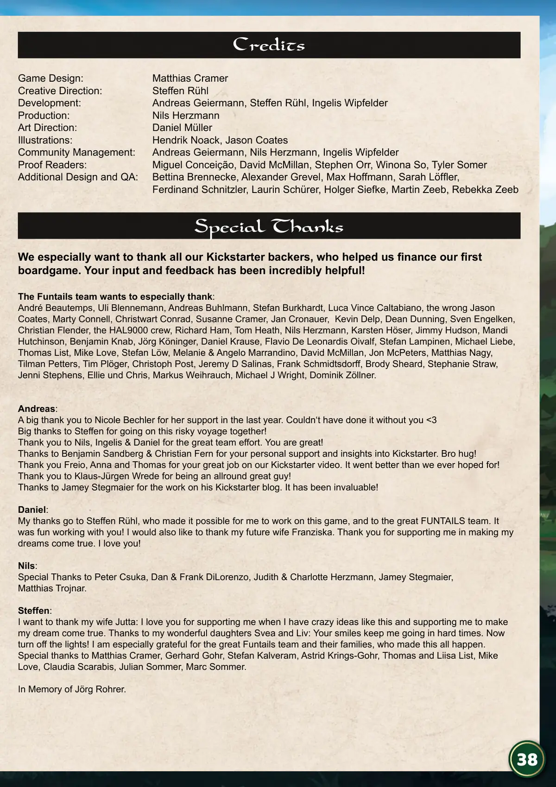
📝 第 39 页 AI 机翻对照（点击展开）
鸣谢
我们特别感谢所有Kickstarter的支持者，他们帮助我们资助了我们的第一款
桌面游戏。您的投入和反馈非常有帮助！
游戏设计：
Matthias Cramer
创意指导：
Steffen Rühl
开发：
Andreas Geiermann, Steffen Rühl, Ingelis Wipfelder
制作：
Nils Herzmann
艺术指导：
Daniel Müller
插画：
Hendrik Noack, Jason Coates
社区管理：
Andreas Geiermann, Nils Herzmann, Ingelis Wipfelder
校对：
Miguel Conceição, David McMillan, Stephen Orr, Winona So, Tyler Somer
额外设计与质量保证：
Bettina Brennecke, Alexander Grevel, Max Hoffmann, Sarah Löffler,
Ferdinand Schnitzler, Laurin Schürer, Holger Siefke, Martin Zeeb, Rebekka Zeeb
Funtails团队特别感谢：
André Beautemps, Uli Blennemann, Andreas Buhlmann, Stefan Burkhardt, Luca Vince Caltabiano, 错误的Jason
Coates, Marty Connell, Christwart Conrad, Susanne Cramer, Jan Cronauer, Kevin Delp, Dean Dunning, Sven Engelken,
Christian Flender, HAL9000团队, Richard Ham, Tom Heath, Nils Herzmann, Karsten Höser, Jimmy Hudson, Mandi
Hutchinson, Benjamin Knab, Jörg Köninger, Daniel Krause, Flavio De Leonardis Oivalf, Stefan Lampinen, Michael Liebe,
Thomas List, Mike Love, Stefan Löw, Melanie & Angelo Marrandino, David McMillan, Jon McPeters, Matthias Nagy,
Tilman Petters, Tim Plöger, Christoph Post, Jeremy D Salinas, Frank Schmidtsdorff, Brody Sheard, Stephanie Straw,
Jenni Stephens, Ellie und Chris, Markus Weihrauch, Michael J Wright, Dominik Zöllner.
Andreas：
特别感谢Nicole Bechler在过去一年中的支持。没有你我无法完成 <3
特别感谢Steffen与我一起踏上这次冒险的旅程！
感谢Nils、Ingelis和Daniel的出色团队合作。你们太棒了！
感谢Benjamin Sandberg和Christian Fern对Kickstarter的个人支持和见解。兄弟拥抱！
感谢Freio、Anna和Thomas为我们制作的Kickstarter视频做得如此出色。效果比我们期望的还要好！
感谢Klaus-Jürgen Wrede，他是个全方位的出色家伙！
感谢Jamey Stegmaier在他的Kickstarter博客上做的工作。这非常宝贵！
Daniel：
我的感谢要归功于Steffen Rühl，他让我有机会参与这款游戏的设计，也要感谢出色的FUNTAILS团队。与你们合作很愉快！我还要感谢我未来的妻子Franziska。感谢你支持我实现梦想。我爱你！
Nils：
特别感谢Peter Csuka, Dan & Frank DiLorenzo, Judith & Charlotte Herzmann, Jamey Stegmaier,
Matthias Trojnar.
Steffen：
我要感谢我的妻子Jutta：感谢你在我有这种疯狂想法时支持我，并支持我实现它。
我的梦想成真了。感谢我可爱的女儿 Svea 和 Liv：在艰难时刻，你们的笑容让我坚持下去。现在关灯吧！我特别感谢出色的 Funtails 团队及其家人，是他们让这一切成为可能。
特别感谢 Matthias Cramer、Gerhard Gohr、Stefan Kalveram、Astrid Krings-Gohr、Thomas 和 Liisa List、Mike Love、Claudia Scarabis、Julian Sommer、Marc Sommer。
纪念 Jörg Rohrer。
特别感谢
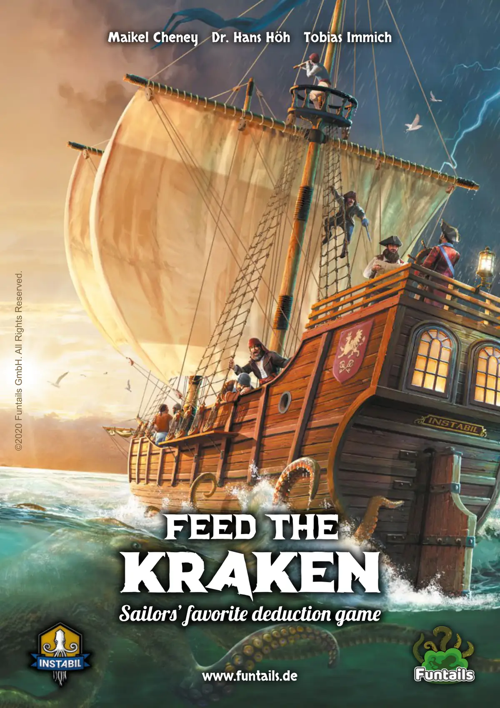
📝 第 40 页 AI 机翻对照（点击展开）
Maikel Cheney Dr. Hans Höh Tobias Immich
www.funtails.de
©2020 Funtails GmbH. All Rights Reserved.